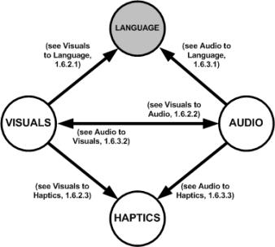
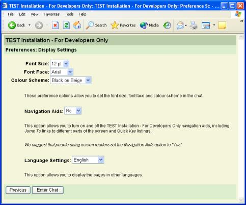
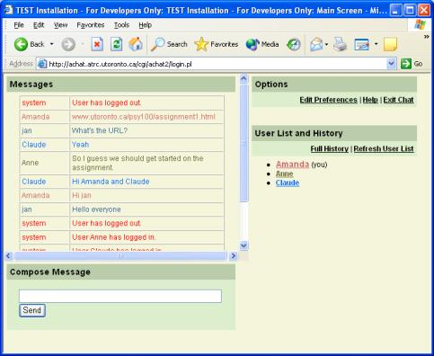

1.1 Introduction
The purpose of this document is to describe techniques by which online cultural material may be made more accessible to people with sensory, motor and learning disabilities.
The accessibility of online content to people with disabilities is an active area of research that has produced a variety of guidelines and best practice documents. However, at the time of writing, these documents have tended to be either general-purpose guidelines (e.g. the W3C-WAI Web Content Accessibility Guidelines-WCAG) or guidelines that have a relatively narrow focus on content in the educational domain (e.g. the NCAM "Math and Science Education Guidelines" and the IMS Accessibility Guidelines). In both cases, the guidelines do little to address issues, such as aesthetic experience, that are of crucial importance in the cultural domain. The intent of this discussion document, then, is not to replace the existing guidelines documents, but rather to build on their strengths to provide more comprehensive coverage of content within the cultural realm. Naturally, as this document is an early attempt to investigate this large and complex area, we fully expect this document to raise as many questions as it answers.
One of the main assumptions of this document is that all of the users of the content are able, in one way or another, to access online content. In reality, access to online content (via computers and any required assistive technology) is often subject to social, cultural and economic constraints. These issues lie outside of the current scope. However, considerations of bandwidth will be addressed.
Another concern is that cultural content is quite often set within the context of cultural practices and norms. Efforts have been made to be sensitive to these aspects within this document. This effort is a balancing act: on the one hand, we must respect certain cultural proprieties, and on the other, explore definitions of what constitutes a good, inclusive, communicative and attractive design.
The core of this document concerns "modality translation." This term refers to the representation of some online entity by an entirely different modality for example, an image described by text. By its nature, such transformation will always be unable to convey fully the aesthetic qualities conveyed by the original. Therefore, the interest is in defining the specific contextual parameters of such a transformation while registering, in the face of its limitations, both its value as an interpretive act and its commitment to being suitably comprehensive and duly unabridged. In the end, the techniques herein are designed to expand and enhance content, for those who wish it. There is absolutely no intention to "dilute" the richness of the experience for any users.
1.1.1 Scope
This document is intended to be applicable to a wide, and ever-expanding, variety of online cultural content. This scope includes content that is exclusively online content (e.g. a computer graphic created with freehand drawing tools) as well as online content that depicts physical material (e.g. a digital picture of a "real" painting in a "real" gallery).
Examples of online cultural content can include the following:
Visual Art: Computer art, interactive multimedia, digital images of paintings, sculpture, installation art, etc., scanned photographs, as well as online tools for creating art.
Architecture: Images of buildings, architectural fly-throughs as well as online architectural design tools.
Dance: Images or video of dancers, as well as online interactive avatar choreography tools.
Music: Audio or video of music performance, singing, opera, as well as music making tools.
Museum-type exhibits: Images or video of museum artefacts as well as artefact organization or exploration tools.
Virtual Galleries: Art displays including visual, audio, multi-media, games, etc. also interactive/participatory elements.
In recent years, cultural production has increasingly expanded into electronic forms. The methods and strategies discussed throughout this document will ensure that people with disabilities also have access to this growing body of cultural content.
1.1.2 Terms Defined
The underlying theme of this document is that a goal of accessible online culture content is possible, inspires creativity and provides a broader conception of the audience. In order to convey these ideas, some novel terms may be used to explain the creation of accessible content. These terms are defined here:
Alternatives-refers to cultural content that may be accessed through another perceptual modality. For example, a spoken description of the visual events in a video is an auditory alternative for visual content.
Accessible equivalent-refers to an alternative form of the work that does enables the inclusion of an individual who would otherwise be excluded from the original due to a sensory impairment.
Audience-refers to the people who observe or participate in the experience of the cultural object/work of art. Participation generally depends on the medium of the art and, for example, may refer to viewing, listening or reading.
Cultural Content/Object-refers to an expression that is generally artistic in nature or to the more broadly conceived of expression of group identity that is formed in part from artistic expression and in part from shared experience.
Equivalents-refers to content that has the same (or as close to the same as possible) sense of the aesthetic, meaning and intention of content in another modality. This term is an acknowledgement of the esoteric nature of cultural objects that are created in a specific medium and is intended to encourage inclusion of these aspects in any translation to another modality.
Haptic Device or Interface-'Haptic' comes from the Greek word haptesthai, meaning 'to touch' (Wall, 2000) and entails both controlling human movement and getting feedback through our sense of touch. A haptic interface transmits forces to a person's hand or fingers in a way that mimics the sensation of touching real objects. Virtual haptic touch can be particularly useful for people with visual impairments. It makes it possible for a blind person to touch virtual objects, corresponding to the way a sighted person can see objects on a computer screen. (Sjöström, 2002)
Interpretation-refers to the culturally sensitive rendering of a message from one medium of dialogueue to another. Mediums of dialogueue may include language as well as artistic forms such as visual art.
Map Symbols-The graphic elements shown on a map designed to represent geographic features or communicate a message, at a given scale. There are three basic forms of map symbology: point, line, and area. Map symbols may represent qualitative data and be shown as a distribution, or they can express quantitative data by showing proportionality or ratio. Map symbols are usually explained in a legend.
Modality-refers to the sensory realm of the content. For example music is in the auditory mode while a video of a musical performance will have both auditory and visual modes. Modalities are further defined in section 1.5, .
Modality Complimentarity-Sensory perception of information about the world around us is normally a cross modal experience, involving a combination of more than one engaged sensory channel (sight, hearing, touch, taste, smell) at a time. Congruency of these multiple signals lead to a more optimal or synergistic comprehension, including easier, faster recognition, with less confusion.
Transformation-has the same meaning as translation and may be used interchangeably with it.
Translation-refers to the process of interpreting content typically from one modality to another. For example, captions are text translations of the spoken part of a video. The creation of captions is a translation from the auditory mode to the visual mode.
1.1.3 Discussion of Disability Culture
This document is concerned with artistic representations of culture, it is, therefore, important to also acknowledge the existence of disability culture. For many people with disabilities, there is a sense of shared experience that exists as a result of having been marginalized and excluded from mainstream culture. This sense of shared identity and experience, along with the human rights activism undertaken in the mid 1980's, has contributed to many people with disabilities identifying with and partaking in the creation of disability culture. As a result, for some artists with disabilities, their identification with disability culture remains central to an authentic representation of their work. For these artists, it may be important when describing their work to acknowledge that it was produced by a person with a disability. Other artists with disabilities, however, may feel that the issue of their own disability has little relevance to their work or their identity as an artist. Should you be responsible for integrating the kinds of accessibility practices recommended in this document and be unsure as to whether or not an artist with a disability wants to be identified as such, please ask him or her their preference on the issue. For a more extensive view of disability culture please see Brown (2002) and Peters (2000).
1.2 Existing Principles of Online Accessibility
The task of creating accessible online cultural content is in many basic respects, the same as that of creating any online content. In both cases, the author is assembling larger pieces of content from an array of smaller constituent parts, including text fields, multimedia, markup and program code. The special nature of cultural online content is evident, not in the types of constituents employed or how they are arranged at a the structural or architectural level, but rather by the information contained within the constituents and the way this information combines in the content as a whole.
At the structural level of online content constituent parts, therefore, the design principles that must be followed are largely the same regardless of the ultimate purpose of the content. For example, support for keyboard navigation is a requirement that is implemented at the level of the constituent parts (links, form controls, etc.), regardless of whether the final content is cultural in nature. Since a body of widely accepted standards, guidelines and techniques describing these structural level design principles already exist, no purpose is served by "re-inventing the wheel" in this document. In fact, "guideline fragmentation," the practice of creating numerous competing guidelines, is a potentially serious problem for efforts to establish a unified definition of accessibility. Therefore, we recommend that authors of cultural online content develop content that meet these the relevant existing principles of online accessibility described in section 1.2.1.1 General Web Content Accessibility Guidelines. Furthermore, for a discussion of those aspects of accessible design that are unique to cultural online content, see section 1.3 Key Benefits of Accessible Design for Online Cultural Content, and for a discussion of modality translations see 1.4 Moving Artwork Across Modalities and 1.5 Introduction to Online Content Modalities.
The following sections list guidelines documents that may be relevant to materials displayed or distributed online. These guidelines should be followed closely, except where they conflict with the solutions discussed in 1.6 Modality Translations.
1.2.1.1 General Web Content Accessibility Guidelines
The Web Content Accessibility Guidelines (WCAG) documents produced by the Web Access Initiative of the World Wide Web consortium (W3C-WAI) are the most widely accepted authority on what constitutes accessible Web-based materials. Other guidelines do exist, for example the Section 508 regulations in the United States. However, because these other guidelines tend to be limited subsets of WCAG, web content that satisfies WCAG will also satisfy most other guidelines. Therefore, we recommend following WCAG as a general rule.
To aid in the implementation of WCAG, links are included to freely available multiple language techniques documents. We recommend following these techniques documents, where possible.
1. Web Content Accessibility Guidelines (WCAG), v. 1.0 (Recommendation)
Produced by the World Wide Web Consortium (W3C)
(Chisolm, Vanderheiden, & Jacobs, 1999)WCAG 1.0 (http://www.w3.org/TR/WCAG10/) was published in 1999 in an effort to unify a variety of informal guideline attempts that existed at the time. The result is the following fourteen guidelines:
- Provide equivalent alternatives to auditory and visual content
- Do not rely on colour alone
- Use markup and style sheets and do so properly
- Clarify natural language usage
- Create tables that transform gracefully
- Ensure that pages featuring new technologies transform gracefully
- Ensure user control of time-sensitive content changes
- Ensure direct accessibility of embedded user interfaces
- Design for device-independence
- Use interim solutions
- Use W3C technologies and guidelines
- Provide context and orientation information
- Provide clear navigation mechanisms
- Ensure that documents are clear and simple
Techniques: http://www.w3.org/TR/2000/NOTE-WCAG10-TECHS-20000920/
2. Web Content Accessibility Guidelines (WCAG), v. 2.0 (Working Draft)
Produced by the World Wide Web Consortium (W3C)
(Caldwell, Chisolm, Vanderheiden, & White, 2003)As of April 1, 2004, WCAG 2.0 (http://www.w3.org/TR/WCAG20/) is still a working draft, and therefore may change in the future. At the moment WCAG 2.0 has a more simple structure than the first version, with an organization that emphasises four guiding principles, each encompassing several lower-level guidelines. The higher level principles are:
- Ensure content can be perceivable by any user.
- Ensure content can be operable by any user.
- Ensure content can be understandable to as many users as possible.
- Use Web technologies that maximize the ability of the content to work with current and future accessibility technologies and user agents.
Techniques: http://www.w3.org/WAI/GL/wcag20.html#techs
1.2.1.2 Authoring Tools and User Agents Guidelines
The Authoring Tool Accessibility Guidelines (ATAG) and the User Agent Accessibility Guidelines (UAAG) are companion documents to the WCAG introduced above. These two guidelines documents apply to software programs that perform authoring and content rendering, respectively.
To aid in the implementation of these documents, links are included to freely available techniques documents in several languages. We recommend following these techniques documents, where possible.
1. Authoring Tool Accessibility Guidelines (ATAG), v. 1.0 (Recommendation) Produced by the World Wide Web Consortium (W3C)
(Treviranus, McCathieNevile, Jacobs, & Richards, 2000)This document provides guidelines to developers of authoring tools. An "authoring tool" can be any software that is used to create Web content of any kind. Examples include HTML editors, programming tools, multimedia editors and more advanced content management-type systems. The guidelines cover the steps required to make the output of the tool and the tool interface accessible.
Techniques: http://www.w3.org/TR/ATAG10-TECHS/
2. User Agent Accessibility Guidelines (UAAG), v. 1.0 (Recommendation) Produced by the World Wide Web Consortium (W3C)
(Jacobs, Gunderson, & Hansen, 2002)This document provides guidelines to developers of user agents. The term "user agent" denotes any software that retrieves and renders Web content. Web browsers are user agents, as are media players, plug-ins, and some assistive technologies. The guidelines also extend to less conventional systems, such as systems for navigating the Web and reading email over the phone. The guidelines cover support for device independence, configurability and navigation.
Techniques: http://www.w3.org/TR/2002/NOTE-UAAG10-TECHS-20021217/
1.2.1.3 Language or Format Specific Accessibility Guidelines
The Web content guidelines, referenced in section 1.2.1.1, General Web Content Accessibility Guidelines, apply generally to any Web content. However, the implementation details will depend on the specific language or format used to create the online content. Along with the WCAG techniques already listed, the following documents should be consulted.
1. IBM Java Accessibility Checklist Produced by IBM
(Schwerdtfeger, 2000)
(http://www-306.ibm.com/able/guidelines/java/accessjava.html)This checklist applies specifically to software programs developed in Java to run as applets or stand alone applications.
2. Accessibility Features of CSS Produced by the World Wide Web Consortium (W3C)
(Jacobs & Brewer, 1999)
(http://www.w3.org/TR/CSS-access)This W3C note includes a technical discussion of features in Cascading Style Sheets (CSS) that support accessibility.
3. WAI Resource: HTML 4.0 Accessibility Improvements Produced by the World Wide Web Consortium (W3C)
(Jacobs, Brewer, & Dardailler, 2000)
(http://www.w3.org/WAI/References/HTML4-access)This W3C note includes a technical discussion of features in the Hypertext Markup Language (HTML) 4.0 support accessibility.
4. Accessibility Features of SMIL Produced by the World Wide Web Consortium (W3C)
(Jacobs & Koivunen, 1999)
(http://www.w3.org/TR/SMIL-access/)This W3C note includes a technical discussion of features in the Synchronized Multimedia Integration Language (SMIL) that support accessibility of multimedia.
5. Accessibility Features of SVG Produced by the World Wide Web Consortium (W3C)
(McCathieNevile & Koivunen, 2000)
(http://www.w3.org/TR/SVG-access/)This W3C note includes a technical discussion of features in the Scalable Vector Graphics (SVG) language that support accessibility.
6. Creating Accessible Flash [MX] Produced by WebAIM
(http://webaim.org/techniques/flash/)This WebAIM techniques document is a good starting place for investigating Flash Accessibility. Macromedia's own Flash MX Accessibility portal is also useful (http://www.macromedia.com/macromedia/accessibility/features/flash/).
7. Specifications for the Digital Talking Book, ANSI/NISO Z39.86-2002 (Developed by National Information Standards Organization)
(National Information Standards Organization, 2002)
(http://www.niso.org/standards/resources/Z39-86-2002.html)This digital talking book format is based on XHTML1.0 and SMIL 1.0 and allows a sequential, hierarchical information structure to be synchronized with recorded audio to create accessible "talking" books. This work is based on the DAISY Digital Talking Book (DTB) Format (The DAISY Consortium, 2001), (http://www.daisy.org/publications/specifications/daisy_202.html).
1.2.1.4 General Software Accessibility Guidelines
Sometimes the Web is used primarily as a distribution medium for software that runs primarily outside a user's browser and therefore does not usually qualify as Web content. In these cases, it is useful to apply more general software accessibility guidelines that do not assume an online environment:
1. IBM Software Accessibility Guidelines, v. 3.1 Produced by IBM
(IBM, 2002)
(http://www-3.ibm.com/able/guidelines/software/accesssoftware.html)These guidelines are primarily intended to help developers meet the requirements of Section 508 of the U.S. Rehabilitation Act. However, with conveniently linked techniques to aid implementation, this is a good general-purpose resource, applying to the design of software programs on all platforms.
2. ISO-16071 (Ergonomics of human-system interaction--Guidance on accessibility for human-computer interfaces) Produced by the International Organization for Standardization (ISO)
(http://www.iso.ch/iso/en/CatalogueDetailPage.CatalogueDetail?CSNUMBER=30858&ICS1=13&ICS2=180&ICS3=)The ISO16071 is a general-purpose standard, similar to the IBM guidelines, but is only available for a fee.
1.2.1.5 Operating System Specific Accessibility Guidelines
Once software that is intended to be distributed online, but run outside the browser, has been reviewed with the general software accessibility guidelines, above, it is advisable to continue by applying guidelines specific to the particular operating systems that a user might be using:
1. Microsoft Accessibility for Application Designers Produced by Microsoft
(http://msdn.microsoft.com/library/default.asp?url=/nhp/default.asp?contentid=28000544)These resources apply specifically to software programs running the Microsoft Windows platforms.
2. MacOS Accessibility Documentation Produced by Apple
(http://developer.apple.com/documentation/Accessibility/Accessibility.html)These resources apply specifically to software programs running the MacOS platforms.
3. Disability Access to GNOME Produced by the GNOME Accessibility Project
(http://developer.gnome.org/projects/gap/)These documents include development and testing guidance for developers of the GNOME desktop for Linux and Unix.
1.2.1.6 Education Focussed Accessibility Guidelines
The guidelines and standards referenced in the sections above are an important starting place for development of web content. However, the general-purpose nature of these documents tend to limit their usefulness in producing fully accessible online content particularly for special-purpose areas such as cultural content. Education is a special-purpose area that has received recent attention resulting in numerous guideline documents and policies. Because online cultural content often includes an educational component, we have included two references to two useful guidelines. Developers intending to implement an educational component within their online cultural content should consult these documents.
1. Making Educational Web Sites and Software Accessible: Design Guidelines Including Math and Science Solutions Produced by the CPB/WGBH National Center for Accessible Media (NCAM) (Freed, Rothberg, & Wlodkowski, 2003)
(http://ncam.wgbh.org/cdrom/guideline/)This document, which we will refer to as the "NCAM Math and Science Education Guidelines," builds upon WCAG v.1.0 and the various platform specific standards. Unlike both versions of WCAG, which are organized around higher-order principles, these guidelines are organized around features of online formats that are often used in science and math related online materials such as
- Images
- Multimedia
- Forms
- Tables
- Textbooks
- Interactivity
- Graphs
- Math Notation
2. IMS Accessibility Guidelines Produced by the IMS Global Learning Consortium
(Barstow, McKell, Rothberg, & Schmidt, 2002) (http://www.imsglobal.org/accessibility/accessiblevers/index.html)This document, which we will refer to as the "IMS Guidelines," builds upon the NCAM Math and Science Education Guidelines to create guidelines that apply more generally to all online educational materials. Among others, these IMS guidelines include sections on:
- Using XML for Accessibility
- Developing Accessible Synchronous (Real-Time) and Asynchronous (non Real-Time) Communication and Collaboration Tools
- Guidelines for Testing and Assessment
- Legal Issues for Accessible Distance Learning
1.2.2 XML and Interoperable Information
Another important consideration for the accessibility of online cultural content is the format for data storage. While numerous proprietary formats exist, we recommend that content authors consider an XML-based (Extensible Markup Language) markup language because it is:
Interoperable:
XML documents allow interoperability between applications, including assistive technologies, because data can be automatically parsed and transformed by different applications as required.
Transformable and flexible:
XML enables and encourages the separation of informational content from the more arbitrary presentation characteristics. This separation then allows user agents to transform the presentation characteristics so that the content can be accessed in a way that meets the individual needs of user, without the author even having to consider those transformations.
Structured and validated:
XML enables and encourages use of consistent hierarchical nested structures, which make it easier for users to navigate complex content. XML documents can also be validated automatically.
Text based:
XML documents are well-suited to handling textual linguistic content. When this content is in place, transformation between modalities is facilitated, enhancing accessibility.
Note that to avoid creating accessibility problems while working with XML, developers should follow any guidelines accompanying any previously published XML language (see SVG, SMIL, above). While it is recommended that developers use these previously published XML languages where possible, there are situations where no XML language is available. When a new XML language needs to be developed then the following guidelines should be followed:
1. XML Accessibility Guidelines Produced by the World Wide Web Consortium (W3C)
(Dardailler, Palmer, & McCathieNevile, 2002)
(http://www.w3.org/TR/xag)This document provides guidelines for designing Extensible Markup Language (XML) formats and applications that take accessibility into account.
1.2.3 Accessibility Focussed Metadata and Information Architecture
When content is created for the web, it is important to add information about the content to aid search and retrieval. This content information is called metadata. Canadian Heritage Information Network (CHIN) provides information about metadata standards on its web site (http://www.chin.gc.ca/English/Standards/metadata_intro.html). Several standards for metadata are available for different kinds of content, such as learning, multimedia and cultural artefacts. Some common metadata standards for learning technologies are Dublin Core (http://dublincore.org/), CanCore (http://www.cancore.ca/), ARIADNE (http://www.ariadne-eu.org/), CEN/ISS (http://www.cenorm.be/isss/), LTSC-LOM (http://ltsc.ieee.org/) and IMS (http:/wwww.ims.org/). Although the standards are different, there has been a move towards interoperability so that the correspondences between them can be sorted and understood by different search and cataloguing systems.
An important aspect of accessibility in metadata is the specification of user preferences and the ability to transform content and content presentation to meet these preferences. In July 2003, IMS adopted an extended specification for accessibility elements of the Learner Information Package (ACCLIP (http://www.imsglobal.org/accessibility/index.cfm)) that control how a user wants information displayed. Other work has been carried out by the ATRC (http://www.utoronto.ca/atrc/) as part of the TILE Project (http://barrierfree.ca/tile/) to develop metadata standards for learning repositories which catalogue content to be presented in more than one modality, such as a caption for an audio track. Viewers with preset preferences in a Learner Information Package (LIP) would experience, for example, text alternatives to sound.
In developing accessible content for the web, care must be taken to include metadata that reflects content. In this way, individuals will be able to detect and utilize content that is appropriate to their control and display preferences.
1.2.4 Inclusive Usability Evaluation Methods
Meeting accessibility standards such as those outlined in 1.2, Existing Principles of Online Accessibility, is an important first step in presenting cultural content on the Internet. Although the two aspects are closely related, perfect accessibility does not guarantee perfect usability. Good design should include some consideration of usability, ideally from the start of a project. Furthermore, the design and development process should include ongoing usability evaluations. In addition to evaluating how well the design meets user expectations for functionality and engagement, usability evaluations should be assessments of how well the design meets the Seven Principles of Universal Design:
- Equitable Use
- Flexibility in Use
- Simple and Intuitive to Use
- Perceptible Information
- Tolerance for Error
- Low Physical Effort
- Size and Space for Approach and Use
(NC State University & The Center for Universal Design, 1997, http://www.design.ncsu.edu:8120/cud/univ_design/principles/udprinciples.htm)
A number of usability evaluation methods have been developed and the reader is referred to the following Web resources for information on usability assessments shown in Table 1. The reader is cautioned, however, to be aware of the mismatch between the imagined user in accessible design guidelines and the imagined user in current usability evaluation methods. Evaluation methods tend to assume ability is a permanent and given state of the user rather than a temporary and chance state.
Resource Description |
URL |
| Compilation of Usability Resources and References (Jeff Axup, 2002) | http://www.userdesign.com/usability.html |
| Comparison of Usability Evaluation Methods (UEMs) (based on Gray & Salzman, 1998) | http://www.userdesign.com/usability_uem.html |
| Efficient & Inexpensive UEMs (by Jacob Nielsen, 1994) | http://www.useit.com/papers/guerrilla_hci.html |
| HCI Web resources from Online Computer Library Centre (OCLC) | http://www.oclc.org/usability/resources/index.htm |
| Heuristic Evaluation (Jakob Nielsen) | http://www.useit.com/papers/heuristic/ |
| Usability and Inspection Methods (James Hom, 1998) | http://jthom.best.vwh.net/usability/ |
| Usability Evaluation Techniques (Napier U, School of Computing) | http://www.dcs.napier.ac.uk/marble/Usability/Evaluation.html |
| Usability Metrics (Napier U, School of Computing) | http://www.dcs.napier.ac.uk/marble/Usability/UsabilityMetrics.html |
Usability evaluations should include users who use a variety of access modes (e.g. screen readers, screen magnifiers, switches and keyboard navigation) and a variety of skill levels (refers to skills required to engage the material and could include aspects such as comprehension level or previous learning and related experience). Furthermore, care should be taken to use evaluation methods that complement the evaluation participant. For example, a participant who communicates via sign language should not be asked to fill out questionnaires in the written form of a spoken language unless that individual is completely bilingual. Similarly, participants who have low vision should have appropriately sized text in all evaluation materials. Evaluators may benefit from sensitivity training that will better able them to build a good rapport with evaluation participants as well as have a better understanding of evaluation methods and materials that are appropriate for a given participant.
1.3 Key Benefits of Accessible Design for Online Cultural Content
For some time now, culture has been increasingly represented in various online formats including art museums, galleries, videos of dance productions, and art created strictly for online environments. An excellent resource for accessible real-world cultural events is Design for Accessibility: A Cultural Administrator's Handbook and it is freely available on the Internet at www.arts.gov/resources/Accessibility/DesignAccessibility.html. Some of the ideas in this handbook are relevant to new media displays or have ideas that are equally valuable for digital content as for real-world content. As cultural content moves onto the Internet, art forms previously unavailable have the potential to become accessible to people with sensory and physical disabilities. This potential is realised by capitalising on the capacity for the digital medium to provide increased user control over presentation formats and speeds, rapid presentation of multimedia content and capacity to transform content from one mode to another
In creating accessible online cultural content, a key challenge facing artists and designers is to create suitable multi-modal representations of that cultural object. There are three possible strategies for achieving this accessible modality translation:
- To be as exhaustive in a work's description and its context as possible under any particular circumstance;
- To reproduce an aesthetic experience consistent with the original work;
- To acknowledge that different media are qualitatively different, and that languages are not the same, and instead create an original new work that carries some of the key feelings and formal values of the original.
It is generally agreed that artists and cultural producers choose a medium of expression for a variety of reasons :
Often, the choice of one medium over another is made because that medium is the one that the artist knows. The artist becomes an expert in a given medium and sees it as an instrument that is an extension of self. That said, in the last two centuries, multidisciplinary artists will choose a medium because it seems the most appropriate for a particular message. These artists are capable of both making art works across a wide range of disciplines, and collaborating with other technicians to put their artistic ideas into effect.
The concept of accessible online cultural content is in step with the skills of the multi-disciplinary or collaborative artist. The expression of artistic works in accessible ways provides exciting possibilities for artists to envision their online cultural works in new ways. While striving to keep "the message" intact, artists are asked to imagine their work from a fresh perspective, and in doing so find that accessibility inspires expression outside of their familiar medium. Providing routes for alternative access invites the artist to explore multiple forms of expression, which in turn, can only stretch and challenge the artistic imagination.
Another positive asset to working towards accessibility in online cultural works is the expanded opportunity to provide additional information about a work's context. Too often, artistic work is presented without context, even though we know that context can be a critical factor in understanding creative expression. For example, a particular photograph may reference important aspects of the history of photography through its subject matter and style. The photographer hopes that the viewer will find those cues within the visual language of the photograph because doing so greatly enriches the experience of viewing it. Realistically, however, only those with the relevant background knowledge are able to place, and therefore, appreciate the photograph in the intended context. Hence, one of the key benefits of creating access to cultural content, is having the opportunity to better represent those works within the particular contexts in which they are created, presented and interpreted. In transforming a work for accessibility, there is an opportunity to add additional information regarding the work's history, creation process and cultural significance that might not be feasible within other paradigms. Inclusion of context strengthens the value of "translation" for access; it becomes an enhancement for all audiences who might otherwise miss the artist's allusions.
Providing accessible equivalents for online cultural works offers many more challenges and benefits to our larger notions of culture and community than just these expressed above. The following sections will articulate several of these challenges and benefits and will provide a starting place for artists and designers to begin contemplating extending their notions of audience to include people with disabilities through extending and expanding their ideas connected with the creation of online cultural content. We intend these sections, like much of this document, to provoke as many questions as they answer, about creating Canadian online culture that includes us all.
1.3.1 Accessible Equivalents for Deliberately Challenging Interfaces
One of the key roles of artists in Western culture is to present ideas, images and experiences that provide us with new understandings of who we are as people, both emotionally and intellectually. Artists are often willing to confront that which is difficult or different and will articulate challenging ideas through various forms of expression. As a result of this role of 'provocateur,' artists are sometimes misunderstood within their own time, only to be highly regarded by subsequent generations who better understand artistic works that the artist's own contemporaries had viewed as difficult. "Artistic license" is the term used to express the right of an artist to create challenging work, regardless of the expectations of others.
At times, artists demonstrate artistic licence through the creation of works with complex interfaces that are intentionally difficult to access, and whose meaning is at least in part derived from this tension. A key challenge in making work accessible may be not to transform the work into something easier to access, but instead to create something in an alternate modality which captures the equivalent sense of artistic expression intended by a piece.
Artists who develop works that are intentionally challenging to access may want to consider offering their work in the range of alternate modalities outlined later in this document. It is clearly easier for an accessible alternative to be developed if the artist is considering multiple modalities as a means to providing access from the work's inception, and we encourage these artists to integrate the ideas espoused in this document into their own design practices.
Commissioning parties, in an effort to design inclusive collections, may also ask artists to consider placing their individual expression into a form that is accessible to the audience. Artists are often willing to create work for specific contexts and to balance pure expression with the communication of ideas. It is hoped that this discussion document may form a starting place for artists in planning and conceptualising such a piece, particularly those later sections related to modality transformations.
It is important that the freedom to develop pieces that are challenging be recognized as a key part of artistic freedom, and it is not the intention of this document to discourage such challenging and provocative developments. Instead, artists are encouraged to take their original work and try envisioning how the meaning associated with it can be successfully extended into different mediums.
1.3.2 The Role of Aesthetics
Aesthetics are the criteria used to judge the qualities of an artistic work including its formal and expressive qualities, its relationship to context, and its relationship to cultural history. For example the minimalist aesthetic is different from the folk art aesthetic however, in either case, there is a starting point for discussion/interpretation/understanding of the work that relates to how the aesthetic is a reaction to things such as other aesthetics and social change. The consideration of aesthetics can be thought of as both an issue related purely to considerations of representation and form and also as a feature of access itself. Considering aesthetics as connected to the production of accessible art works represents a challenge to artists and designers of online cultural content, as each media (video, music, text, images) has its own set of aesthetic values and concepts, which do not always move easily across forms.
When examining the intersections between aesthetic considerations and the translation among modalities of online cultural works, the key is to resist viewing the translation among modalities as a strictly functional operation. The artist or producer may carry out distinctly different conceptualization and design processes depending upon whether the work is being developed as accessible from the start, or whether a an existing work is being transformed into one that is accessible.
In the first case, the creator may be freer to explore alternate modalities and options for expressing their ideas across a wider range of media from the onset. It is possible, in this scenario, for those commissioning or producing the piece to work with designers to make the online cultural content and all of its elements stylistically consistent and coherent in relation to an aesthetic direction. Accessible art works should have formal and communicative values that are as aesthetically effective as other art works.
The latter situation, that of transforming an existing work into one that is accessible, requires a reasoned balance between the work's original expression and what can similarly be achieved in other media. Depending on how closely the designers of the transformation are working with the original designers, there can be negotiation of a change in aesthetic direction. It is important that this kind of negotiation occur with a shared sense of respect for the original design aesthetic. Linking old and new elements together can be challenging and requires that stylistic/aesthetic coherence be considered desirable and preferable. It may even be possible that the complexity of such an undertaking results in the decision not to renovate completely and restyle a particular online cultural piece, but instead to develop a new accessible alternative that captures the intention of the original. Either way, translated art works should continue to be aesthetically successful in the new medium.
Regardless of the specific tactics undertaken, deciding to consider questions of aesthetics in the context of creating accessible online culture is a worthwhile pursuit given that the online cultural content's "attractiveness" ultimately has value, insofar as it encourages a continued use and enjoyment of those materials by its viewing audience.
Finally, as it is wise to periodically update the aesthetic/style/design of any online cultural content in order to keep an interested audience, it is recommended that issues of accessibility of those materials be examined whenever an update of the content occurs.
1.3.3 Entertainment and Engagement Values
"Entertainment value" is a term used to describe the capacity to capture the attention of a popular audience and keep them watching. Entertainment value also describes emotional involvement with a cultural work. To make a work entertaining requires mobilizing the craft and artistry of a medium around content that appeals to audience members. It implies a total immersion in the experience, also known as the "suspension of disbelief," in which viewers knowingly set aside their notions of reality in order to engage with the alternative reality put forth by a work of art. When an art or media work has so succeeded at this creation of an alternate reality, it is referred to as having "suture" because it has been sewn together with perfect, invisible, seams.
Narrative forms are most often the vehicle for entertainment and, depending on the medium, narratives follow certain formulae to achieve this sense of seamless flow. In filmmaking, for instance, audio is often used to link scenes, and a familiar shot language is drawn upon to suggest transitions of time or space. It is important to note, however, that these media-based conventions can change as result of cultural and technological shifts. For example, early filmmakers were extremely literal in their depiction of time transitions, often even following a character or story line in real time. Today, time transitions are more inferred and less literal, and are achieved by drawing on a modern audiences' accumulated knowledge of film conventions.
Finding ways of indicating emotional cues, and rhythms is key to successfully transforming an online cultural work while staying true to its emotional content. Having a consistent way of indicating an emotion, point of view or shot, could potentially build a parallel language for accepted visual and audio conventions for viewers who might not be able to see or hear the content of such a piece. As a large part of a viewer's interest in a work is derived from the emotional content of the work, exploring alternate ways of making this information available to people with disabilities remains central to the challenge of creating accessible online cultural content.
Designers or artists responsible for transforming online cultural material into accessible alternatives need to pay attention to narrative conventions and processes and the various ways that a specific medium carries emotional impact and think about parallel strategies for alternative modalities. If the intention of an online piece is entertainment, then it is integral that the artists/designers will find a way to maintain the entertainment value associated with a piece when offering an accessible alternative.
The engagement value of an art work is also an important concept to consider when producing an accessible alterative. Engagement assumes a critical and media literate approach to cultural content and asks that the audience figure out the work without being fed all the answers by the artist. Engagement assumes the right for art works to be ambiguous, and requires that the viewer interact with a work in such a way as to have space to interpret the work, by picking up on sometimes subtle cues offered by the artist. This ability to unpack or disentangle how cultural products engage or seduce audiences is valuable piece of how people engage with cultural works. As such, it too is a factor that should be considered when both making inclusive works, or translating existing works into accessible alternatives. Artists and designers should be cautioned to not completely spell out all of a work's ambiguous qualities when making an accessible version, but instead to find creative ways to incorporate the same sense of engagement in the accessible version, by creatively exploring the medium and it's capacity to maintain the engagement value of the original.
1.3.4 Perspective: A Cultural and Technical Consideration
Like many elements of culture, perspective is both a technical element and an element that suggests a specific culture. In creating an accessible alternative to an online cultural work, particularly those that are primarily visual in nature, it is important to understand and consider the perspective of the piece from both a technical and cultural point of view.
Perspective, in a technical sense, means the visual devices used to create depth of field within a painting or photograph, and which allow subjects to be arranged for the viewer in a hierarchy within the picture plane
In the cultural sense, perspective is arranged and understood in terms common to a shared experience and is influenced by cultural references that derive meaning from a cultural understanding. For example, while the dominant arrangement of the picture plane in Western culture is to have a depth of field with images receding into the background, Australian Aboriginal sand paintings present images across the visual plane suggesting a sense of continuity of space and time, a concept deeply linked with the Australian Aboriginal worldview. Inuit paintings that incorporate transformation processes within a flat plane also use depth across a canvas to suggest that events happen within cultural notions of time.
In creating an accessible equivalent of an online cultural piece, it is valuable to reference the ways that perspective act within a given art work. The perspective of a work can impart a great deal of information about who created the work, what cultural communities and histories the work references and what the viewer's relationship to the work is intended to be. It is important that this information be treated as central to the creation of an accessible equivalent work.
In creating an accessible equivalent of a work, it may also be possible for designers and artists to explore other notions of perspective offered by a wide range of artistic communities. Artists and designers should be encouraged to explore the range of ways that perspective can be implied in alternate modalities.
1.3.5 Interpretation
This discussion considers interpretation through two lenses. The first considers the ways that specific languages are not neutral, but informed by their cultures. The second discusses the subjectivity that is fundamental to reading works of art.
When we take a word or concept from one language and explain it in another, we place it into a different cultural context. Cultures use language in different ways. Nicole Brossard (1987) made this point in her book The Mauve Desert, a story told through the "voice" of the French interpreter and then that of the author with quite different nuances. This use of characters' cultural voices illustrates the dynamics of interpretation. When works of art, literature, and music are interpreted for the deaf, these take hold some of their original meaning but are also forever transformed through language. The same is true in reverse. Deaf culture, created in sign language, would have a different meaning for the hearing. The following statement from the Sign Language Center's web site reinforces this point
Deaf culture is the celebration of pride in the history of the traditions of the community. The knowledge of American Sign Language (ASL) is what truly hold the community together and how socialization is passed down to succeeding generations. As a visual language, social mores, and rules are affected. Eye contact and body language, for example, is key in effective communication with a group of communities visually. These tools are often overlooked communicating orally(Sign Language Center).
As the popular film states meaning can be "lost in translation," Yet at the same time, as the film also illustrates, new kinds of knowledge and culture emerges in the friction between original meaning and culture and translation. It is in this exciting context that art that crosses the boundaries of ability and disability must be considered. While culture is often the route to another's experience, language can be a difficult issue particularly when the lived culture behind the languages differ. Xose Roig, a professional translator has remarked, "the single most important aspect of being a translator is not the aspiration to master both languages, but rather both cultures" (Roig, 2004). These underlying differences and cultural nuances are an important part of any interpretation. It may be useful to consult with a professional translator who will be able to provide cultural insights or writings in the profession such as Translation Journal to gather information about approach when translation of a work is undertaken. Also, issues of translation have been tackled in the literary arena and information about translating literature may provide guidance in ways to manage interpretation of non-literary cultural objects.
The second issue in interpretation is subjectivity. There is often not one fixed meaning or interpretation for an artwork. The artist usually has an understanding of how they want the work interpreted, and over time, there may develop general agreement about the key readings of the art, but the audience, may have quite different and very subjective perspectives. One of the values of cultural works is that they open new experiences of the world for the audience, experiences that are not always easy to describe. This subjectivity makes it hard for the translator to explain a work of art. While, as the interpreter can describe the artwork as a physical entity, a description of the emotional qualities of a work is subjected to the interpreter's experience and engagement with the work. For example, when the National Gallery of Canada bought a Barnet Newman painting, some were delighted while others were offended.. Also, interpretations of art works change over time, as art is constantly developing new practices. Hence, the interpreter of an artwork needs to recognize that there is personal and historical subjectivity involved. Finally, the interpreter must take care that qualities of the artwork that are not literal are described in the interpretation process.
1.4 Moving Artwork Across Modalities
Movement across modalities refers to the re-articulation of the expression to a form that is perceived by a different sense from the original. For example, a film that is perceived fully in audio and visual modes could have modality translations that include audio descriptions of visual elements (described video) and text descriptions of audio elements (captions). In this way, the film may be fully perceived in just the audio or just the video mode without loss of significant information. Different media have different expressive qualities. Artists use a medium, or a combination of media, in order to create specific effects that are aesthetic, and in order to reference particular histories of practice related to a particular media. (For example, video art often references television conventions). The complexity of considering translating work into different mediums deepens when also considering that audience members, either because of disability or lack of exposure to a particular media, may not necessarily have the experience of the original medium. Information sheets and audio guides at galleries, for example, attempt to fill this gap between common knowledge and specialty knowledge that may alter understanding of the cultural object and this model may be a good starting point for modality translations.
The following sub-sections will explore aspects of cultural objects that require specific attention when modality translations are carried out: emotion, perspective presentation and cultural differences.
1.4.1 Translating Emotion Across Modalities
Finding expression for narrative intensity and for emotion is one of the most demanding aspects of creating alternative modality equivalents. Artists and designers are encouraged to be creative and explore both a range of options from within their own chosen media and others in order to arrive at creative solutions for the transmission of emotional content. Within an audio format, for example, adding simple devices like volume and directional shifts, or layered sound effects to suggest a particular physical setting are some simple ideas for getting at emotional content in a work. In the visual format, colour coding may be an effective strategy for expressing emotion.
Perhaps it is useful to look at an example of a translation of an art work in order to better elucidate these concepts. In this case, consider the elements that may be involved in order to express a sculpture (largely a visual modality) through sound (auditory modality).
Working with sound that moves through the dimension of the screen, with different physical volumes represented by changing qualities of audio might provide a non-sighted viewer with a sense of the movement of the sculpture. Working with a composer who can create a melody that feels like the sculpture and incorporates these technical suggestions could further enhance sound that could capture the sculpture's atmosphere.
Cross-disciplinary teams are needed for effective translation. Multimodality will always work better when incorporated into the original plan for the artwork. Also, whenever possible, the user community should be involved in the development of the work from the planning stage. This participatory design strategy will mean that an effective language emerges as the artwork develops that is satisfactory to the artist and the community.
Box 1: Accessibility from an Artist's Perspective by Sara Diamond
Artists will have varying reactions to the request that their work be accessible. Many of them will find the idea of representation of their idea in another medium to be a difficult yet intriguing challenge. Artists who have a range of disciplinary skills, or who share a curiosity about other media will best meet this challenge. The goal is to produce a professional quality artistic experience from the original concept through all media. This again reinforces a team-based approach, where artists with skills in different areas can help each other with multimodal transformation. Artists will need to know that they have access to resources to undertake this work.
In this document we stress the importance of participatory design involves the user from the beginning. Creative artists engage with their subjects, internalize the experience of them as much as they can and create from that basis. Recent success in community arts shows that these projects can be inspiring for those involved, for the artist and for the community, bringing out their skills.
However, most artists are not trained to work in this collaborative manner or if they are, it's in the hierarchy of film or television production. Participatory design requires that the artist revise his or her vision as the creative process emerges-this is not always possible and can also weaken the artwork. Many artists work in a solitary way. A system of "sketching" or "prototyping" and testing the perception of the work may be a viable strategy.
1.4.2 Provide Multiple Perspectives
The issue of the "adaptation perspective" is a critical one for content in the cultural domain. In the educational domain, this perspective is not such a problem, because the perspective of the adaptation can be primarily driven by the intended learning outcomes. For example, when a particular piece of artwork is described, with the intention of teaching a straightforward concept, such as a particular lighting technique, the description is likely to be fairly impersonal and may focus on the mechanical.
On the other hand, in the cultural domain, where the intention is to convey, at least to some extent, the aesthetic experience of the artwork, any description will depend to a far greater extent on the expertise, experience, and personal taste of the describer. A work will "mean" something different to each person who experiences it, so there is no truly "neutral" perspective. For people who must experience some or all aspects of a work through the lens of someone else's reaction, the result will inevitably be subjectively influenced by the opinion of the describer.
A possible solution is to provide multiple, clearly labelled, perspectives for each work. The viewer can then pick and choose from the range of perspectives available in order to construct their own experience.
Potentially enlightening perspectives might be provided by:
- Artist/designer/composer: As the creator of the work, this is often an extremely valuable perspective, although the artist's view should not necessarily be treated as "the last word" on what a piece of content "means."
- Curator: Curators often work towards the development of a theme in shows that they produce, and choose artwork for particular reasons related to it. The curator's perspective on why a particular piece appears in a show or gallery can be extremely enlightening for those accessing the content.
- Other "experts" on the work: Gallery cards/dossiers already exist for many works, and can be accessed as a source of perspective on a piece.
- Contemporaries (other artists, friends, family members, etc.): Mixed perspectives from individuals who know the artist or artists who will understand the influences of the artist can add a depth to the work not otherwise available.
- Others: This could include descriptions and reactions from members of the general public. There are many ways to do this, ranging from simple feedback systems, to iterative systems that allow visitors to interact with and modify each other's submissions on what the work means to them.
We suggest providing the available perspectives in an "on demand" manner, controlled by the user, allowing the user to experience as much, or as little, as they choose.
1.4.3 Consider the Presentation Context
All curators consider the context in which art works will be presented when they create an exhibition and the presentation context lends meaning to the work itself. The web increasingly provides gallery spaces for web art and design. An online work may have been created specifically for a web based environment and may not have any "real life" equivalent; other online cultural objects represent art pieces that have been created for a physical environment.
In translating or providing descriptions for online cultural pieces, considering the presentation context is key. If the piece is being described, it may simply be enough to mention the works presentation context. If instead a work is being transformed into an entirely different modality, artists and designers should consider the meaning imparted by the original presentation context to the piece and determine ways of imparting some of that meaning in the transformed version of the work.
1.4.4 Considering Cultural Differences
Integrating cultural specificity into the process of transformation is important. Artists may want to work with others from their own cultural background when transforming or developing an expression in another modality. They may also consider consulting those within the community (for example, cultural elders) who are knowledgeable about cultural practices and conventions in order to develop a culturally sensitive, and accessible, transformation of their expression.
In those cases where someone other than the original artist is responsible for transforming a work into an alternative modality, it is integral that they consult the artist directly for guidance. Should it not be possible to contact the artist, guidance should be sought from members of the cultural community represented before moving ahead with modality transformations.
Beyond issues related to translating culturally situated online materials into accessible formats, the storage and presentation of these works in an online electronic archive is an example of another situation that requires cultural sensitivity.
Many Aboriginal communities throughout the world have different rituals concerning some of the major elements of life, death, birth and the afterlife. In an Australian Aboriginal community, for example, when a member of the tribe has died, all of their knowledge and all physical items are destroyed. The name of that person is no longer used in that community, and any other member with the same name has to change it out of respect for the deceased. This is a situation that requires that those responsible for presenting related materials online and/or transforming those materials into an alternate modality approach their roles armed with knowledge about acceptable community practices.
In cases such as the one described above, it is highly recommended that those who are responsible for cataloguing or posting culturally situated art works or artefacts online be knowledgeable about the cultures from which the works are derived. Consultation with the communities represented should be undertaken before attempting to make these works available in an online environment, and any concerns or issues that surface throughout the course of consultation should be adequately addressed on a case by case basis. Consensus concerning the presentation, use, transformations, descriptions and or any other manipulating of the works should be reached with representatives of the community before moving forward with making the material available.
Some existing online cataloguing projects have addressed the concerns related to hosting culturally sensitive works online through the addition of a Cultural Use Statement, the terms of which users must agree to before entering the site. A Cultural Use Statement may include the legal rights pertaining to intellectual property issues, but may also demand that the use or transformation of any of the online materials be approached from a position of respect for the culture represented. The Cultural Use Statement can also be used to offer any specific instructions the user may need in order to treat the materials in a respectful and sensitive fashion
Additional measures that may be undertaken to ensure that cultural content online is treated appropriately may include requiring that some materials be password protected, or require permission from the site's administrator to be viewed. It may also be possible to ensure that such materials may only be viewed directly from a remote server and not be available for download to a local computer.
1.4.5 Integrate with Workflow
In general, accessible design is far more difficult to achieve when the measures required for accessibility are left to the end of the design process. By that time, fundamental decisions have already been made about the format, style, and layout of the content that may have inadvertently introduced unnecessary barriers to access. Revisiting these earlier decisions often results in a cascade of further changes. As these large-scale changes may be impossible due to scheduling or budgetary constraints, well-intentioned goals of accessibility may be ignored.
Considerations:
When accessibility is integrated into the workflow of online content development from planning, to storyboarding and through coding, barriers to access are flagged earlier and can be addressed without requiring major changes. A positive side effect of this approach is that other quality assurance issues, such as general usability and platform independence, are often dealt with more easily when developers have taken greater care in the planning process.
1.5 Introduction to Online Content Modalities
This section explores further the concept of content modalities in the online medium. Translation between these modalities is discussed in section 1.6, Modality Translations. In order to understand modality translation, it is important to understand the properties of the modalities that are available. In general, sensory modalities derive from the full capabilities of the familiar human senses: sight, hearing, smell, taste, touch and the less well known sense of kinesthesis (the sense of movement and position of the body). However, in online settings the range and quality of sensory modalities available are reduced by the practical constraints on representation and output imposed by the online medium and the computer systems used to access that medium. The first senses excluded from the online context are smell and taste. Interfaces for these senses are an area of research, but no practical applications exist. The modalities that remain--visuals (see 1.5.1, Visual Modality), audio (see 1.5.2, Audio Modality) and haptics (see 1.5.3, Haptic Modality)--are affected to varying degrees by the online medium as explained in the sections that follow.
In addition to these sensory modalities, is a more abstract modality: language (see 1.5.4, Language Modality). This modality is not experienced directly; instead it is experienced via transformation into any of the three common online sensory modalities: visually as text or gesture, aurally as speech and tactilely as braille.
In the previous section, the more abstract aspects of cultural objects were discussed: emotion, perspective, cultural influence and artistic license. The following sections introduce each of the common computer sensory modes as well as the more concrete aspects of cultural objects that are conveyed through these modes.
1.5.1 Visual Modality
The visuals modality refers to content that is perceived by the sense of sight. Once content is perceived, the visual system determines information such as colour, shape contours, movement, and location in space. In addition to these very basic characteristics, a large number of higher-order visual properties have been identified in visual cultural objects. These properties include composition and layout. Language may also be present in the form of text or sign language images. When a visual object is translated to another modality, the information provided by these concrete properties of the visual object should be utilised by the translator. Further discussion of the translation of both simple and complex properties of the visual modality is available in section 1.6.2, Alternative Modality Equivalents of Visual Content. In the same way, the properties of visual objects may be useful for providing an alternative equivalent of an online cultural object. When visuals are utilized, the following should be considered:
- Linguistic information such as text must be read serially, which is slower and requires more attention than non-linguistic, graphical information. Graphical information can be communicated in a highly parallel fashion.
- Interference can occur if linguistic information in the audio and visuals does not match.
1.5.2 Audio Modality
The audio modality refers to content perceived by the sense of hearing.
Once audio content is perceived, the auditory system determines perceptual characteristics such as loudness, pitch, and sound localization. Language may be included in the form of speech or singing. When an audio object is translated to another modality, the information provided by these concrete properties of the audio object should be utilised by the translator. Further discussion of the translation of both simple and complex properties of the visual modality is available in section 1.6.3, Alternative Modality Equivalents of Audio Content. In the same way, the properties of audio objects may be useful for providing an alternative equivalent of an online cultural object. When audios are utilized, the following should be considered:
- Speech is well-suited to linguistic information and proceeds faster and requires less attention than reading.
- Speech is usually limited to one speaker at a time.
- Music is processed quickly and has a strong emotional component.
- Sound effects are processed quickly.
- There is a strong expectation that sound effects will be coupled with actions or events.
1.5.3 Haptic Modality
Note: The number of home users with access to haptic devices is relatively low at present, but may increase in the future.
The haptic modality refers to content perceived by the senses of touch (via sensors in the skin) and kinesthesis (via sensors in the muscles, tendons and joints). The sense of touch is sensitive to pressure (that may be further perceived as vibration and texture) and temperature. The sense of kinesthesis is sensitive to the movement and position in space of body parts. Information from this sense is vital for contextualizing the sense of touch;. without knowing the position of one's fingers, one would not be able to tell whether the pressure felt across the hands and palms was due to a ball or a flat surface. The haptic senses are perhaps the most "exploratory" of the senses, due to the necessity of reaching out and physically manipulating objects in order to form perceptions.
In online settings, these concrete aspects of the senses of touch and kinesthesis are made available by haptic devices that translate signals from the computer into physical forces. However, only the most sophisticated (and expensive) devices are able to convey them all. Further discussion of the translation of both simple and complex properties of the visual modality is available in section 1.6.2, Alternative Modality Equivalents of Visual Content. In the same way, the properties of audio objects may be useful for providing an alternative equivalent of an online cultural object. When audio is utilized, the following should be considered:
- There is a strong expectation that haptics will be coupled with visual actions and sound effects.
- While haptics can convey certain types of information very well, the bandwidth of the haptic devices currently available are quite limited in comparison to the visual modality.
- Only Braille users will be able to access linguistic information via haptics.
1.5.3.1 Haptic Devices
Because haptic devices differ from each other far more than screens or speakers, it is useful to compare what is available:
Note: Haptic devices are designed to be held in the hands are often designed to serve a dual role, as producers of output forces (display) and detectors of user input forces (control).
- Refreshable Braille Displays:
Devices that, in association with text-to-Braille transformation software, produce Braille output via bumps or pins that raise and lower in real-time as required. These devices may include directional keys for document navigation. Hard copies of Braille information can be created with Braille embossers. - 3D full force feedback devices:
These devices incorporate specialized servomotors that resist or constrain hand motion. They allow users to experience virtual objects via physical traits such as resistance, solidity, or viscosity. Examples of such devices include the "dataglove" with an external articulating exoskeleton and boom-mounted stylus devices that provide six degree-of-freedom (x, y, z, yaw, pitch, and roll) interaction. These devices are generally expensive, but the realistic quality of their output makes them well-suited for applications such as surgical simulation, molecular research and immersive environments. - 2D force feedback devices:
These devices are usually mice that are constrained both to a flat plane and by an arm governing left-right, near-far position. While such devices showed promise, they were commercially unsuccessful and are now hard to procure. Force feedback joysticks are relatively common, they are of very limited use outside of gaming applications. - Tactile feedback devices:
Tactile feedback devices are more affordable, and therefore more common. These devices usually vibrate to convey taps, bumps, boundaries and textures rather than move on their own or restrict movement. The prime audience for tactile feedback devices is gamers, but applications have and are being developed for blind or low vision users, or for those who learn best through tactile or kinaesthetic sensory channels. - Techniques and applications:
Tactile desktop technologies, software that enables the haptic device to sense the desktop, such as TouchSense and the FEELit Desktop technologies by Immersion Corporation (http://www.immersion.com), allow users to feel their way across the computer "desktop" (locating and selecting icons and menus) or feel web content. - Hybrid Displays:
Displays such as Tactile-Visual screens and fingertip/pad or nail-mounted tactile displays have yet to progress beyond research labs
1.5.4 Language Modality
Language is useful for translation in that it bridges all three of the sensory modes common to the online environment; it can be represented visually, audibly and tactilely through automatic translation routines that function at the processor level. The first of these automated translation routines, from language to visuals, is familiar to anyone who has seen text on a computer screen. The second automatic translation routine, from language to audio requires text-to-speech (voice synthesis) software or hardware that produces a series of sounds that mimic human speech on the basis of the linguistic information. The third automatic translation routine, from language to haptics makes use of a text-to-Braille software that feed into a refreshable Braille display or Braille printing embosser machine.
The existence of these automatic translation routines makes the language modality a critical go-between for translations between the sensory modalities. When translating to or from the language modality, there are several characteristics that should be considered such as pacing, word choice, sentence length, tone, genre, rhyme and rhythm. The full nuances of written language are well documented in the literary field and we recommend that translators look to this body of work or collaborate with experts in this field to achieve an equivalent alternative of the original object.
Further discussion of the translation of the language is found in the relevant modality discussion of section 1.6, Modality Translations (e.g. text is discussed in the Visual Modality section). When language is involved in a modality translation, the following should be considered:
- Language mastery varies with age, order language was learned and learning disability
- Linguistic information is processed at different speeds depending on the sensory mode in which the information is delivered
1.6 Modality Translations
Modality translation refers to the creation of equivalent alternative representations of online cultural content. Modality translation is necessary remove barriers to access experienced by individuals who have sensory impairments. Modality translation widens the audience for any online culture object to include all individuals rather than limiting participation by ability to perceive information in any one modality. A further benefit to modality translation is that the audience can experience the cultural object in a variety of modes that may in turn enhance their understanding and experience of the cultural object. Artists too may find that their creativity is positively challenged and stretched by the creation of multiple access modes to their artistic expressions.
1.6.1 Twelve Possible Modality Translations
The three sensory modalities and the language modality can be inter-connected with each other by means of twelve potential modality translations1.

Figure 1: Potential Modality Translations.
Figure 2: Language bridges all three computer modalities and is a flexible medium for modality translation.
Three of these potential modality translations are from language and require little explanation:
- Language to Visuals: Translated automatically and without information loss into rendered text, displayed on a monitor screen.
- Language to Audio: Transformed automatically and with little information loss into synthesized speech, played from a speaker.
- Language to Haptics: Transformed automatically and without information loss into Braille, displayed on a refreshable Braille display.
Three more of the potential modality transformations are from haptics and are not covered in depth in this document because little work has been done in these areas. However, translation of real-world haptic information is fairly common; some examples are briefly described here:
- Haptics to Language: Text that describes any haptic information of objects, including texture, weight and temperature.
- Haptics to Visuals: The texture of a real-world object is often apparent in visual images of that object.
- Haptics to Audio: When a real-world object is rubbed or dropped, the texture or weight of the object is often apparent in the resulting audio information.
The six remaining modality transformations are covered in greater depth in the sections that follow.
- Visuals to Language (see 1.6.2.1)
- Visuals to Audio (see 1.6.2.2)
- Visuals to Haptics (see 1.6.2.3)
- Audio to Language (see 1.6.3.1)
- Audio to Visuals (see 1.6.3.2)
- Audio to Haptics (see 1.6.3.3)
1.6.2 Alternative Modality Equivalents of Visual Content
The following sections provide an in depth discussion of the translation of visual content to language, audio and haptic modes.
1.6.2.1 Visuals to Language
Language as an alternative mode to visuals involves the use of text or speech to label or describe both static (e.g., photographs, paintings.) and dynamic (e.g., film, animation) visual information.
Visuals are a powerful communicative tool for ideas and emotions. However, though it is said that a picture is worth a thousand words, to individuals unable to see due to a visual disability or circumstance (e.g. a low bandwidth connection or an audio browser in an eyes free setting like a car), the picture has no worth at all.
A variety of methods exist for adding text descriptions of one kind or another to visual online content. Some of these methods are listed here, but the reader is referred to the WCAG v.1.0 (Chisolm et al., 1999) for more detail:
- For simple images, short animations, buttons or hot-spots, short text labels (e.g. <alt> text in HTML) can quickly provide the user with sense of the appearance and purpose of the visual element.
- For more complex images or simple animations and videos, the short text labels can be supplemented with longer text descriptions (e.g. <longdesc> text in HTML).
- For complex animations and videos it may sometimes be appropriate to provide text transcripts that combine captions (text format of audio) with text descriptions of visual information in the video (descriptions of the actions, body language, graphics, and scene changes of the video track).
- For geospatial information, please see Companion Document 5, Representations of Visual Geo-Spatial Information.
There are added benefits to including these kinds of text descriptions. For example, alt-text descriptions of images stored in a database can also serve as searchable meta-data to enable queries. Information such as the title of an artwork, artist and the year the artwork is produced can be included in the image tag as <alt> text, and a longer description of the visual media including colours, visual composition and emotions evoked can be described in a longer description, as in the case of <longdesc> text. Other keyword searches of long descriptions or text transcripts would also be possible opening up new ways of searching and studying visual media. For example, an individual interested in the lexicon of body language may search for examples of body language in film through a keyword search of the video description.
General Techniques for using Language to Describe Visuals
The technical guidelines for including language-based descriptions with images are well-established, however, the form of the language description of cultural objects is less clear. The intent of art or of the artist varies; for example, it may be to shock, to educate, to comment, to entertain, to vent, to explore or to express. This variety makes it more difficult to provide stock guidelines for how to create language alternatives for visuals that are in digital form. Some aspects to consider including in the description, however are:
- The appearance of the visual (e.g.: genre, dominant colours, object placement, textures, setting, use of light, use of movement).
- The context of the visual (e.g.: the discourse around the visual that helps us to understand it).
- Use of conventions (e.g. flashbacks in video or bare feet in a modern ballet video) or borrowing of conventions (e.g.: use of pose, countenance and background common to renaissance religious painting in a 20th century painting).
- Meaning of the aesthetic experience of the visual to the alternative content creator.
- Essential elements of the visual (e.g.: the words of a letter shown in a movie, the brushstroke of a painting or a character listening in the shadows).
- Instructions to take the same pose of a subject to stimulate a sympathetic kinaesthetic sense.
- The different goal/interest/age of the viewer (e.g.: descriptions might vary for a curious visitor, for a student of art history, or for a young person.
- Any subtext in the visual (e.g.: emotions, mood, or autobiographical information).
- The most appropriate format of the description to mirror the visual (e.g.: pace, tone, emotion-laden text, poetry or prose, formal or informal diction).
The following will examine specific kinds of visuals and considerations for the making of equivalent text versions more closely. First photographic images will be discussed, then moving images and finally interactive images.
As with all art forms, a dialogueue and means for examining and understanding photographic images has developed. These conventions of discussion may be useful to the individual who creates text alternatives for photographs. For example, When providing descriptions of photographic still images, it is important to draw attention to the photograph's punctum and focal area. Punctum is that element in the photo that touches the viewer emotionally. For some, punctum is the key to understanding the essence of the photograph. Photographic images also give the appearance of depth through depth of field, as a photographic image always contains a foreground, field of view (range of focus) and background.
In the case of moving images, the additional element of time enables a narrative or story to be told to the viewer. The narrative unfolds through a series of images that reveal action within the image's frame over a period of time. The illusion of motion occurs either by the subject movement across the frame or by moving the camera's field of view over the subject. In either case, moving images direct the eye to a focal point-an image or symbol that is important to the development of the story. The added complexity of time and motion to a sequence of images may be confusing or cause difficulties for some viewers. Ways in which moving images can be enhanced or clarified by text descriptions are discussed in the following.
While it is more common to use speech to describe video (see 1.6.2.2 and Companion Document 3 Online Video Description), there are a few instances where it is useful to provide a text description of the visuals that appear on-screen. Text descriptions of only the essential visual elements usually appear with captions and are referred to as collated text transcripts. These descriptions might be used by a blind or deaf-blind viewer who is accessing the content via Braille display in an area where sound is either not appropriate (e.g. a library) or not possible (e.g. no speakers), or a viewer who needs help to understand the important visual elements in a video. Collated transcripts are usually brief to keep demands on the viewer reasonable. However, full text transcripts of the visual portion of a video could include such information as the set design, ambience, scenery and appearance of characters (i.e. costume and emotional expression). In this way, the full richness of the visual information can be accessed and read by a screen reader, viewed on a Braille display, or transformed in size to accommodate a person who has low vision.
Interactive images are hybrid images that can be displayed in either a browser or kiosk environment. These images serve a function, in addition to their aesthetic value. Interactive images include icons, buttons, thumbnail images, image maps and animated gifs.
In all of these instances (with the exception of animated gifs and animation sequences), the user is informed via a visual cue such as a button, how to perform an action such as "go to the next page." If a user is unable to see the button and the button is not accompanied by alternative text then the user will not have any information about the function of the button. Text that is embedded in images is not accessible to screen readers which only convey the electronic text used to encode the language modality; embedded text is an "image" to screen readers and cannot be translated.. Iconographic images such as button that looks like an envelope to represent "send email" present a similar challenge for screen readers. Icons rely on visual language (i.e. symbols) that represent the function of a button. Although icons are beneficial in that they transcend language barriers, they still require alternative text in order to remove vision barriers.
1.6.2.2 Visuals to Audio
Audio as an alternative to visuals involves the use of audio information (e.g., voice, music, sound effects,) to convey visual content.
There are several different ways that this transformation might be achieved, each suited to different situations:
- Video Description
- Music
- Sound Effects
- Automated Audio Display
The following sections discuss the translation of visual content to the audio modality.
Video Descriptions
Video descriptions (also called audio descriptions or described video) are small segments of recorded speech that are added to the audio track of video presentations in order to convey important information from the visual track. The CRTC (2004) defines this transformation in two ways:
- Audio description involves the provision of basic voice-overs of textual or graphic information displayed on the screen. A broadcaster providing audio description will, for example, not simply display sports scores on the screen, but also read them aloud so that people who are visually impaired can receive the information.
- Video description, or described video, consists of narrative descriptions of a program's key visual elements so that people who are visually impaired are able to form a mental picture of what is occurring on the screen.
In a traditional broadcast setting, video descriptions are added "post-production" (i.e. after the original program is fully edited) and are usually confined to pauses in the audio dialogue, to prevent interference. However, in video presentations in which the dialogue is nearly continuous, this arrangement can reduce the amount of information that can be conveyed via video description. In contrast, digital video has greater flexibility and in online settings it is sometimes possible to pause the video presentation in order to provide the user with sufficient or even additional information via extended video descriptions.
For more information on "post production" video description, see Companion Document 3, Online Video Description.
Live events present a major challenge to the production of video descriptions, because the real-time nature of the presentation leaves no time for the traditional process of identifying dialogue pauses and carefully crafting descriptive utterances to insert into those pauses. Instead, the describer is thrust into a role very similar to that of a sports colour commentator, who must describe the dynamic action on a playing field in real time. However, the describer's task is further complicated by two factors: first, the need to share the audio track with any dialogue from the live event and second, the potential lack of a guaranteed frame of reference as is the case with playing field action.
For more information on "live" video description, see 3.1.1, Real-Time Online Video Description.
Music
Music is an art form that relies on the creative abilities of a composer to apply the rules and idioms of a culture for its creation. As with many of the modality translations, any attempt to express a visual element with music would be subjective to the composer's creative abilities. Even so, consumers of a musical equivalent may gain understanding of the visual element being described if they share a common culture with the composer. If the visual element itself is artistic or abstract in nature experiencing an image through another art form may be desirable, even though the transformation is a subjective one.
There is a long history of describing visuals through music in the genre of program music, which was defined in the late 1800's by Dittersdorf (Randel & Apel, 1986) and flourished in the 19th century. Program music is "music that attempts to depict nonmusical ideas, images or events" (Randel & Apel, 1986, p.656). There are three ways that composers approach the creation of program music:
First, program music can be created to be expressive in nature. The composer creates music that is intended to invoke the mood or character of a visual element. In his "Enigma Variations," Elgar attempts to capture the emotional essence of a group of people (and a dog) who are closest to him. After stating the Theme, Elgar writes a series of variations titled with the initials of the people they are to represent. Starting with his wife Elgar portrays each individual often focusing on a specific defining attribute such as limited abilities on the piano, a laugh, love, or gentrification. Elgar also uses specific events to inspire the representation of some of the people in his variations, such as a conversation, an accidental fall into the River Wye, or a long journey. Of all the approaches to transforming visual elements with music this is the most subjective.
Secondly, the depictive approach to musical transformation sees the composer use imitation to describe visual objects. In a sort of musical verisimilitude the composer imitates real world sounds, motions, or events to represent the visual element. An example of this approach is by Mussorgsky who used music to describe the exhibition of a series of paintings by Victor Hartmann in his piece "Pictures at an Exhibition." Mussorgsky represents the act of walking from picture to picture at the exhibition in a series of "Promenade" movements, which vary as the mood of the viewer is affected by the paintings. For many of the paintings Mussorgsky suggests a complete animation of the picture in the music. For instance in the movement "Bydlo" for a picture of an Ox pulling a cart Mussorgsky varies the volume of the music to depict the Ox pulling the cart from a great distance, past the listener, and away over the horizon. Mussorgsky also uses suggested actions in the picture to inspire the music. For the picture titled "Baba Yaga," Mussorgsky uses rhythmic orchestral shots in the music to suggest the tamping of the giant mortar and pestle used by the witch of that Russian fairy tale.
The narrative approach is the third possibility for a composer attempting to transform a visual element using music. Relying on the music's progression from beginning to end the composer gives the impression of continuous story, argument, or emotional evolution. A verbal or textual narrative often accompanies this approach to program music. In Prokofiev's "Peter and the Wolf" a narrator explains the method by which the music tells the story and then tells the story in sync with the music. Prokofiev uses a specific motive and instrument to represent each character in the story. For example, Prokofiev uses the string section to represent Peter, the flute for the bird, the oboe for the duck, the clarinet for the cat, the bassoon for the grandfather, three French horns for the wolf and the timpani for the hunters. Additionally, the motive or musical germ of the music changes to represent the state of the character being represented as the story progresses.
The ability of a composer to transform a visual element or event into music continues to be the subject of much debate within the artistic community. Arguing against such a possibility Stravinsky (1936) said, "music is, by its very nature, powerless to express anything at all." Whether this is true or not, the people of western culture seem to have a large lexicon of musical associations that a composer can draw on to express visual elements in musical form.
Sound Effects
The visual channel's great capacity for information transfer has made it the predominant focus in the design of both human-computer interfaces and the content they convey. Strongly neglected are non-visual, aural representations of web content. Ours ears guide us in everyday activities outside of computer use; often, the ears lead the eyes. It would benefit us to focus more on how they can aid us in better comprehending the increasing complexity of information we are exposed to while using computers.
Sound effects are non-speech audio (whether real-world or abstract, synthetic or recorded) that may also convey relevant information. One difficulty in applying a sound effect to an image is that sound is temporal, with no dimensions, in contrast to the two dimensional nature of the static image, which has colours, shapes, and patterns. These dimensional differences mean that the individual transforming visual content must consider the following:
- Type:
- real-world (aural metaphor) abstract
- Polarities (low to high, slow to fast) of:
- Pitch
- Loudness
- Tempo
- Repetition
- Location (stereo spatialization)
Real-world sounds tend to work well for representing objects, as the sound itself effectively prompts the user to identify or recall the associated object. Abstract sounds include beeps, whistles and buzzes made by computer applications to convey information; they may even be musical. Sound effects are effective for giving cause and effect related feedback to users, indicating the state of an element, or sonifying data about an object being represented. While abstract sounds can be used to identify objects, a user may quickly be overwhelmed in attempting to memorize a large list of objects represented with abstract sounds.
With comparatively little in the way of research findings or guidelines for effective visual to sound transformation techniques, designers have generally used experience and "common sense" to guide their work. Unfortunately, many such design choices taken under close observation have proven counterproductive for the users. Surveying listeners' perspectives in context may serve as the best guide. Ensure validity by testing any sound design, and avoid the error of relying solely on intuition. The results of audio perception experiments have frequently yielded surprises, flying in the face of researchers' predictions.
Walker and Kramer (1996) have shown that while listeners agree pitch increases in the representation of greater value, pitch might actually decrease in representing greater size. Visually impaired users may show a contrasting preference for the type of mapping. Walker (2002), asked blind and sighted subjects to choose preferred sound effects to represent increasing monetary amounts. Blind subjects opted for a reality-based model, where the increasing dollar value was represented by sounds of decreasing pitch. In this case the sound represented the sound made by stacks of money dropped on a table-top ("tap", "plop", "thud") and dollars were represented concretely as being heavier in the perceptual model of the blind subjects. Sighted subjects, also expected sounds to change with values but did not expect a real mapping of the sound to dollar value; instead, abstract sounds were preferred.
Iterative evaluations throughout the development phase that gather feedback from target users is recommended for any user interface that includes sound mappings. Through recurring testing during development, one can avoid a variety of pitfalls, including the phenomenon in which a worst performing cue at outset changes, with practice, to become the preferred and most effective one (Walker & Lindsay, 2003). Also, the developer should keep aesthetics in mind because they have been shown to play a vital role (Bussemakers & de Haan, 2002). For example, sounds that are harmonically rich, yet elegantly simple and emotionally pleasing help to enrich the user experience (Thornton, Kolb, Gemperle, & Hirsch, 2003).
Discussion, research findings and design considerations regarding durations, polarities and parameters of sound effects are further provided in Companion Document 5, Representations of Visual Geo-Spatial Information as is the topic of spatialized sound. Panning is a feature of electronic sound authored for spatialized display systems, such as stereo or surround speakers. Combined with proper equalization (the determination dominant frequencies in a sound), the inclusion of audio based three dimensional location cues (for an object) or a soundscape can aptly contribute to user comprehension of information.
While web content creators can easily have sound effects triggered with visuals, there is a specific non-proprietary graphic format we recommend for its accessibility features. Scalar Vector Graphics (SVG) is an open standard newly being adapted by conventional web browsers. Currently, a user would be required to have an SVG viewer plug-in associated with their browser to experience the graphic, and Adobe SVG viewer is the only SVG browser to support sound (wav and au formats). Support for sound had not been included in the W3C guidelines, but a user of Adobe SVG viewer can hear sound implemented in the Adobe specified way. The W3C plans to add this support in future versions of SVG.
The general procedure for adding these accessible graphics to HTML with an associated sound is as follows:
- Construct the SVG
Any text editor can be used. Third-party software, such as Adobe Illustrator 10 or 11 (www.adobe.com/products/illustrator), can greatly speed up development.Code Sample 1: An SVG that renders a blue rectangle.
<?xml version="1.0" encoding="ISO-8859-1" standalone="no"?> <!DOCTYPE svg PUBLIC "-//W3C//DTD SVG 20010904//EN" "http://www.w3.org/TR/2001/REC-SVG-20010904/DTD/svg10.dtd"> <svg xmlns="http://www.w3.org/2000/svg" xmlns:xlink=http://www.w3.org/1999/xlink xmlns:a=http://ns.adobe.com/AdobeSVGViewerExtensions/3.0 > <rect width="150" height="50" x="20" y="20" rx="10" fill="blue" stroke="#933" stroke-width="5"/> </svg>
- Add Labels and Group for Interactivity
All interactive elements need to be grouped, which creates a group tag in the SVG document; in Illustrator, use the layers palette. Each element identifiable by screen readers needs a label, which will in turn be spoken.Code Sample 2: Adding a title and group (shown in bold)
<?xml version="1.0" encoding="ISO-8859-1" standalone="no"?> <!DOCTYPE svg PUBLIC "-//W3C//DTD SVG 20010904//EN" "http://www.w3.org/TR/2001/REC-SVG-20010904/DTD/svg10.dtd"> <svg xmlns="http://www.w3.org/2000/svg" xmlns:xlink=http://www.w3.org/1999/xlink xmlns:a=http://ns.adobe.com/AdobeSVGViewerExtensions/3.0 > <title>SVG audio example</title> <g id="mybutton"> <rect width="150" height="50" x="20" y="20" rx="10" fill="blue" stroke="#933" stroke-width="5"/> <text x="95" y="55" text-anchor="middle" font-size="30" fill="#933">Press Me</text> </g> </svg>
- Add Sound Effect
Before the opening of the group tag <g> insert an audio anchor <a:audio> with the attribute xlink:href set to the file name of the sound to be played. The event handler must also be set in the audio anchor with the "begin" attribute.Code Sample 3: Adding audio anchor (shown in bold)
<title>SVG audio example</title> <a:audio xlink:href="button.wav" begin="mybutton.mouseover"/> <g id="mybutton"> <rect width="150" height="50" x="20" y="20" rx="10" fill="blue" stroke="#933" stroke-width="5"/> <text x="95" y="55" text-anchor="middle" font-size="30" fill="#933">Press Me</text> </g>
- Incorporate SVG into HTML
Use an EMBED tag to place the SVG graphic in a webpage.
Code Sample 4: HTML with embedded SVG. The previous samples could provide "rectangleWithSound.svg".
<HTML> <EMBED NAME="rectangle" SRC="rectangleWithSound.svg" WIDTH="700" HEIGHT="400"> </BODY> </HTML>
The addition of tactility to SVG is discussed in 1.6.2.3 Visuals to Haptics. Further details on SVG and code samples for providing visual to audio and tactile mappings are available in Companion Document 5, Representations of Visual Geo-Spatial Information where descriptions and references are made to resources and guidelines for the optimal design of accessible geo-spatial content.
Automated auditory displays
Auditory displays are technologies that automatically provide auditory information (synthesized speech, sound effects, etc.) about particular non-auditory events that they are able to detect. A well known auditory display is the Geiger counter, which is a device that responds to increasing levels of environmental radiation by producing an increasingly frequent clicking sound. Auditory displays are common in specialized environments such as surgery theatres and aircraft cockpits.
Screen reader software programs (see www.utoronto.ca/atrc/reference/tech/scread.html for more information) are examples of speech-based auditory displays commonly used by people with visual disabilities, but these programs are limited to synthesized speech displays of electronic text.
Only during the last several years have more general-purpose auditory displays for visual information become available. One example of a non-speech auditory display is the "vOICe", pronounced "vee oh-I-see-ee" (http://www.seeingwithsound.com). The vOICe is an application that allows blind users to hear an aural representation of any computer graphic. The graphic might be a picture or a graph from the user's computer or it might be an image captured by video camera worn by the user and processed by portable computer equipment. Of course, any kind of real-life on-the-fly navigation with such equipment entails a steep learning curve.
The soundscape produced by the vOICe is derived through three forms of greyscale image to sound mappings:
- Left and Right are mapped to stereo sound. The sound pans from left to right at a default rate of one second for an entire image.
- Dark and Light are mapped to loudness. Brighter areas are louder and black areas are silent.
- Up and Down are mapped to pitch. A bright spots that are higher in an image sound higher pitched than the same bright spot lower in an image.
The application has a graphical user interface sound representation feature that transforms the region around the desktop cursor into sound, and an "Internet Sonification Browser" for web graphics that may be used in conjunction with a screen reader. The software has also been extended to web3D (virtual reality modeling language) content browsers, so that users can hear their way through a navigable, web-based 3D environment. Artists or translators should consider including the vOICe sound output with an image (see http://www.seeingwithsound.com/voice.htm for more information) or incorporating the output into the work.
1.6.2.3 Visuals to Haptics
Haptics, as an alternative to visuals, involve the use of tactile displays to convey visual content.
For most sighted people, it is hard to conceive of the world around them in any other way than by forming an internal visual construct. Maps and cartographic drawings have been used widely throughout the ages to record and convey to others the lay of the land, watery divides, and hazards unseen. Alternative means of grasping geographical information have also arisen. For instance, the Inuit have utilized bone carvings as tactile maps of coastlines. These tactile maps enable "in-the-mitt information-access" for kayakers - a method more practical in inclement and low vision conditions.
A spread in use of affordable tactile devices and correlate software for encoding tactile information in web content (as discussed in 1.5.3.1 Haptic Devices) has made interactivity on the Web a more sensual, yet unrefined reality. Some researchers have observed that touch is the "reality sense", in that objects touched are discerned as more real that what is seen or heard (Taylor, Lederman, & Gibson, 1973). The ability to feel the face of information might be considered a valuable inclusion to a user's future experience of surfing the Web.
Research literature on haptics generally distinguish between two types of tactile representation: object shape and texture. Stephen Wall, in his University of Edinburgh thesis "An investigation of temporal and spatial limitations of haptic interfaces" (www.dcs.gla.ac.uk/~steven), refers to a "haptic spectrum" where geometric primitives making up the overall shape of an object can best be described as low frequency, high amplitude signals, available as kinesthetic cues. Such cues would necessitate a haptic device with force feedback. Conversely, surface properties of objects, such as textures, can be expressed as high frequency, low amplitude signals, more suited as cutaneous cues, including vibration.
General acceptance and use of specialized control and display devices have a strong correlation to cost, and affordable haptic devices lack the sophisticated mechanisms providing robust force feedback. While SensAble Technologies (www.sensable.com) currently provides the PHANTOM (Personal Haptic iNTerface Mechanism) with high fidelity force feedback at a cost of over ten thousand dollars, an affordable variant has been promised in the near future. In the meantime, Immersion Corporation (www.immersion.com), formed in 1993 to bring haptics out of the research lab and into the market with over 200 patents in tactile feedback, has an array of devices on offer. Like Sensable, the higher-end is only accessible, dollar wise, to the research labs and corporate realm. Immersion's affordable force feedback devices are no longer commercially available, leaving only basic tactile feedback trackballs and mice (currently including the HP Force Feedback Web Mouse, Kensington Orbit 3D, Belkin Nostromo n30, Logitech iFeel Mouse, and Saitek Touch Force Optical Mouse) that incorporate TouchSense Technology:
The term tactile feedback is used to describe devices that play high-fidelity tactile sensations, but generally won't move or inhibit the movement of either the device or the hand holding it. A tactile feedback device can play a wide variety of distinguishable taps, textures, and vibration effects to communicate with the user and greatly enrich the computing or gaming experience (www.immersion.com/developer/technology/devices).
Immersion Technology's Web Designer and Studio are TouchSense applications (www.immersion.com/developer/technology/tools) available to web content designers for a fee. They allow for creation and editing of physical effect parameters (such as duration, gain, magnitude, phase, waveform) and deployment of Immersion Force Resource (IFR) effects in desktop applications (using programming languages which access ActiveX controls, such as Visual Basic or Director's Lingo) and web contexts (using Javascript functions). An introduction to fundamentals document is available at www.immersion.com/developer/downloads/ImmFundamentals/HTML/ImmFundamentals.htm
Our recommendation for associating haptic effects (using Immersion TouchSense) with web-based visual information entails the non-proprietary graphic format Scalar Vector Graphics (SVG). The user would be required to have an SVG viewer plug-in associated with their browser, such as the Adobe SVG Viewer (www.adobe.com/svg/viewer/install), and the Immersion Web Plug-in (www.immersion.com/plugins). The general procedure2 for adding accessible graphics to HTML (in this context, a map image having both audio and tactility using Immersion-licensed TouchSense devices) is as follows:
- Construct the SVG
Any text editor can be used. Third-party software, such as Adobe Illustrator 10 or 11, can greatly speed up development. - Organize Objects in Layers for Interactivity
Group all elements in appropriate layers and label both elements and layers. For example, in a map setting, put symbols for train station, bus station, and airport into one group, primary, secondary and tertiary roads into a second group, mountains and bodies of water forming two more groups. All interactive elements need to be grouped, which creates a group tag in the SVG document; in Illustrator, use the layers palette. Each element identifiable by screen readers needs a label, which will in turn be spoken. - Assign Haptic and Sound Effects
Assign JavaScript functions to layers. Associate each haptic effect with a sound effect, which makes map features more evident to people with visual impairment. Each category of map elements gets assigned a separate haptic effect with javascript, e.g. one for roads, one for built-up areas, one for water and occasionally one for borders. Javascript functions to detect user input and trigger the events; in Illustrator, use the interactivity palette. Otherwise, for those versed in javascript, code can be added to the SVG with a simple text editor. - Incorporate SVG and haptic effects into HTML
Use an EMBED tag to place the SVG graphic in a webpage. An object reference to the Immersion Web Plug-in must be made, along with javascript referring to the tactile effects. - Add both Immersion Web plug-in and user environment detection to HTML
Use an OBJECT tag and javascript to detect presence of the Immersion plug-in associated with users' web browser. If non-existent, user is referred to plug-in site. (Code supplied in 8.7)
Further details on SVG and code samples for providing visual to tactile mappings are discussed in 8.7 Representations of Visual Geo-Spatial Information, where descriptions and references are made to resources and guidelines for the optimal design of accessible geo-spatial content. Aside from SVG for 2D content, the Representations of Visual Geo-Spatial Information delves into Web3D (Virtual Reality Modeling Language (VRML)/Extensible3D (X3D)) for web-based 3D content. Modality complimentarity, or how signals in varying sensory modalities reinforce or bootstrap each other to convey a message, is stressed in anticipation of the next generation of multimodal systems.
1.6.3 Alternative Modality Equivalents of Audio Content
The following sections provide an in depth discussion of the translation of audio content (speech, music and sound effects) to language, visual and haptic modes.
1.6.3.1 Audio to Language
Language as an alternative to audio involves the use of words to describe or label sound information (voice, music, sound effects)
There are several different ways that this transformation might be achieved, each suited to different situations:
- Transcription of dialogue (Captions)
- Description of Music
- Description of Sound Effects
These translations from audio to text are discussed further in the following sections.
Transcription of dialogue (Captions)
Audio dialogue is typically accompanied by a video although it may also appear on its own as in a web radio broadcast. When accompanied by a video, dialogue is usually represented in visual form as captions. Other options for text description of dialogue is full text transcripts. However, spoken words are more than just the words alone; other qualities such as tone, pitch, rhythm, hesitation and even silences add a great deal of meaning to dialogue.
For this reason, dialogue transcribers and captioners are encouraged to consider how these paralinguistic aspects of language may be conveyed. One option for captioners that may have applicable techniques for transcribers is to create enhanced captions. Enhanced captions are text captions that include other information to convey paralinguistics. For example, a caption that is enhanced might have a word appear in a different font style, size or colour to create emphasis or convey mood. Other options are inclusion of images in an enhanced caption to convey paralinguistic information that is not otherwise available. These options are discussed further in 1.6.3.2 Audio to Visuals and in detail in Companion Document 2 Online Enhanced Captioning.
Description of Music
"Music is universal, but its meaning is not." This simple truth posses a great challenge to the person who takes on the task of describing music. A medium, such as music, that is totally ubiquitous among all cultures has great potential to be the ultimate tool of translation. However, due to its abstract nature meaning in music and even its significance vary greatly from culture to culture and from person to person. While music is an abstract medium, it is always created in a cultural context. It is this cultural context that can be used to create a complete and useful description of a piece of music.
Using text to describe a piece of music creates an additional challenge because the experiences of listening to music and reading text are very different. A listener of music's first reaction is visceral or emotive; the reader of text's first reaction is intellectual. This perceptual difference makes the effective textual description of music difficult.
One could go about describing physical characteristics of a piece of music, such as texture, timbre, or tempo. While this information may be of use to a performer or composer of music, a listener does not understand a piece of music according to its physical characteristics. The describer could also approach the task of describing music from the more emotive point of view. This approach is closer to the way a listener perceives music, but the emotion or mood that a piece of music invoke is culturally subjective and may even differ from individual to individual within a culture.
The describer of music must identify these culturally subjective elements in order to communicate the music-culture of a piece to the reader. Music-culture has four components that describe how people interact with music. These components can be used build a description of a piece of music that adequately communicates the nature of the described music. The four components of a music-culture are:
- Ideas about music (why)
- Social organization (who)
- Repertories (what)
- Material culture (how)
By organizing a description of a piece of music according to the components of music-culture the describer will not only give a complete description, but also a description that is easily sorted into a layered system. A layered system will allow the reader to get a description of the aspect of the music relevant to them.
The way a culture thinks about music has a great impact on the meaning that a piece of music carries. Different cultures even differ on what music is. For instance the Kaluli of Papua New Guinea believe that bird sounds are music and the music they make represents feelings of sadness. In some cultures music has exclusive religious meaning, while in other cultures there is not even a word for music. In western culture it is generally thought that music is "humanly organized sound" (Blacking, 1973). Individuals within a culture may also have differing ideas about what music is. While one person understands music as the product of popular icons, another may have primarily experienced music in a religious context, and yet another may associate music with elevator rides on the way to work. Considering these differences, the describer of a piece of music will want to include information about the culture the piece of music was written for and in what context it was to be performed. In addition to explaining the ideas that influenced the creation of the piece, the writer will want to explain the context in which the music is being used (assuming the description is of a piece of music that exists in a larger context and the cultural context that it is embedded in differs from that in which it was created.)
Who wrote the piece of piece of music and their social position has a surprising effect on the listener. For instance a television spot for world aid uses John Lennon's "Happy Christmas (War is Over)." The fact that John Lennon was one of the dominant pop icons of the 1970's, that he was very involved in the anti war effort in the later part of his career and that he was assassinated all have an effect on the listener who was a part of that culture. Cat Stevens' conversion to Islam was very relevant to the meaning in much of his music. This event becomes especially potent when one considers attitudes toward music in strict Muslim sects, where music is considered an earthly distraction. While John Lennon and Cat Stevens had the status of popular icons in western culture musicians in some other world-cultures have a low social status, and in other cultures music is a strictly communal event and the identity of a composer is not acknowledged.
Repertories:
This part of music-culture is about the music itself as opposed to cultural definitions of music, or who wrote the music. Every culture has a group of musical performances that we call a repertory. These performances are identifiable by the members of the culture as being their own, and share a set of defining attributes. This is the most obvious layer of a piece of music's music-culture and is a natural place to begin describing a piece of music. There are six types of attributes associated with a music's repertory. They are:
- Style
- Genres
- Texts
- Composition
- Transmission
- Activity
The stylistic attributes of a piece of music include pitch elements (mode, melody, harmony, tuning systems), time elements (rhythms, meter), timbre elements (voice quality, instrumental tone colour), and sound intensity (volume) (Titon, 1996). As noted earlier, a listener does not observe these aspects of a piece of music in detail, so generalizations about stylistic elements are desirable (unless the description is for composers or performers.)
A culture's repertory of music is divided into units called genres. The genre of a piece of music can act as very valuable information to the reader of a description as it contains much about the context in which the piece was written (lullaby, hymn, rock and roll, jazz, dance, etc.)
The text (or words) of a song is the easiest information to communicate to the reader about a piece of music as a modality translation already exists in the form of written text. Similarly, the actual musical notation for the piece may be a useful translation to visual for individuals with musical training.
The method by which a piece of music enters the repertory may also have bearing on a complete description of a piece of music. For instance, if the piece of music belongs to a classical tradition the music will follow a strict set of rules and will have been created by a person trained in the art form the music represents. On the other hand, if a piece of music hails from a folk tradition it will follow a much simpler set of rules and may evolve and change from performance to performance. Improvisation may also be a part of a pieces composition. In this case the performer becomes involved in the creation of the music and depending on the genre may have an additional set of rules governing the improvisation.
The transmission a piece of music has describes the method by which a performer knows how to perform the music, whether by oral tradition or by a notation system. While this aspect of a piece of music is primarily of interest to composers and performers a notation system is a ready-made translation of a piece of music that can be incorporated in the description to give the reader an idea of the shape of the melody, character of the harmony, and the number of sounds involved. It should be noted that western style music notation was designed to give performance instructions to performers with maximum efficiency, and therefore does a poor job of depicting the actual sound in a visual manner. "Piano Scroll" notation is an example of system of music notation that is intended to represent sound.
The performance of music in almost invariably accompanied by actions on the part of the people involved in the performance (both audience and performers, assuming such a distinction exists). Some questions a musical description will answer with respect to this topic are: Is the performer animated in some way? Is the audience dancing? Does the performer engage in the ritual destruction of his/her instrument? How are the audience and performs dressed?
The final component of music-culture that a description of a piece of music are the materials or tools that are used in the performance of the music. No one alive today has actually heard any performance before 1870. However, using information about the tools used in those performances we are able to recreate the music that was made in times before recording technology was invented.
Description of Sound Effects
Sound effects refer to audio that is neither speech nor music. Sound effects usually serve one of three functions: 1) draw attention or emphasize, 2) provide ambience and 3) convey information over time.
An attention-drawing sound effect is most often used to provide confirmation of some action a user takes (reinforcing cause and effect) or to emphasize an event. One characteristic of these types of sound effects is that they are short, being designed to deliver their effect with maximum efficiency. Generally, these kinds of sound effects have two forms: those that imitate real world sounds or those that are abstract in nature.
In the case of a real world sound effect it is important for the description to reference what real world thing is being imitated, include the duration of the effect and the intention of the effect.
Sound effects that are abstract include all sound effects that do not refer to any real world object and who may have music attributes. Naturally these sound effects are more difficult to describe. However, the description should include the physical characteristics of the sound effect such as timbre, texture, rhythm and pitch. Real world sound effects often suggest their intended effect in the thing it imitates. Abstract sound effects do not share this feature, so it is very important that the intention of the sound effect also be fully described.
Ambience sound effects provide ambience for whatever context the user is in. Like other sound effects, ambient sound effects can be real world in nature (the sound of a busy train station or machine noises) or be abstract (pulsing hum.) Typically ambient sound effects are longer in duration. When describing ambient sound effects it is important to include the intended atmospheric effect. While describing the physical characteristics of this type of sound effect include how constant the effect is answering these questions: what is the total duration? Does the effect change over time? Does interaction by the user cause the sound effect to change?
A third category of sound effects includes those that are intended to convey information over time. A description of this type of sound effect must fist describe what information is being conveyed and the nature of the information being represented. This sort of sound effect may be used to inform the user of the changing state of a progress bar or the sonification of a dynamic data set, such as the number of active process a computer has running. A description of such an effect must address whether the information is progressive, random, interrupted or continuous. The description of an informative sound effect must then include how the physical characteristics of the sound change with the information.
1.6.3.2 Audio to Visuals
Visuals as an alternative to audio involves the use of graphics or animation to transform audio (voice, music, sound effects) into visual information.
"Visual for audio" covers the following:
- ASL Translation
- Affective component of enhanced captions
- Visual displays of music or sound effects
The following sections discuss these translations from the audio modality to the visual modality further.
ASL Translation of Speech
While captions are a good visual representation of speech, a better alternative for many deaf individuals is a sign language interpretation. Extensive guidelines on provision of ASL interpretation of audio may be read in Companion Document 4 Remote Real-Time ASL Interpretation.
Graphical Component of Enhanced Captions
Captions are effective in conveying the words of the speech component of audio. Other aspects of the audio, however, are often lost in standard captions. For example, tone and pitch of the voice are lost in the caption process. Also lost are non-speech elements such as music, environment sounds and even noticeable silences or pauses. Enhanced captions may provide a way to include these important audio elements in this modality translation. Enhancements may be simple such as changes to the style of the caption such as font type, size or colour. Other enhancements may be emoticons or graphics that indicate mood or kind of music. An extended discussion of enhanced captioning is available in Companion Document 2 Online Enhanced Captioning.
Visual Displays of Music or Sound Effects
It is very important to include alternative modes of crucial information such as interface warnings or alerts. For example, a sound that confirms an event such as sending a file should have a corresponding visual confirmation. An artist may incorporate sound into a new media piece such that sound occurs when the cursor moves over a certain area of an image. A viewer without benefit of speakers or unable to hear due to the environment or physical factors would not be able to participate fully in the work. However, if the artist includes other modes of access such as a visual translation of the music then the viewer who cannot hear is better able to participate fully in the work. Visual representations could be static or animated representation and may be speech or abstract. Defining optimal ways to convey non-speech audio through visual means is an area open to exploration and experimentation. This avenue of exploration may provide exciting and interesting challenges for artists interested in expanding their audience as well as their audience's experience of their work.
1.6.3.3 Audio to Haptics
Haptics, as an alternative to audio, involves the use of tactile displays or controls to convey audio information.
Tactile output is not unusual in the form of dedicated device prompts, as in the case of a vibrating pager. While affordable tactile devices (see 1.5.3.1 Haptic Devices) have increased the use of tactile prompting on personal computers, their current software and drivers neglect the strong potential for tactile alternatives to audio alarms ("You have mail!"), particularly when applications visually obscure one another. Very little research or recommendation exists for optimum haptic representation of sound. However, software developer kits for haptic devices do allow to those with patience and programming capability to tap into this largely unrealized potential.
Some experimentation in musical expression has led to the development of specialized devices and even suits, such as that developed by Eric Gunther at MIT. Gunther's haptic suit "facilitates the perception of musically-structured spatio-temporal patterns of tactile vibration on the body's surface, with concurrent patterns of audible vibrations as musical accompaniment" (Purcell, 2002, p.36). Media Lab Europe's Palpable Machines Research Group (www.mle.ie/~ian/palpable) is prominent in its pursuit of audio haptics applied to the creative realms of story telling, music, dance and broadcast media.
In our everyday experiences, tactile sensations are often accompanied by sound; think of how a subway platform resonates in conjunction with an approaching, unseen train. In sensory modality transformation research, the connection between sound and touch have received strong attention.
1.6.4 Accessible Collaborative Tools
While many of the above solutions consider accessibility from the view point of participating in available online culture, it is also critical that the collaborative process of building culture also be accessible. Following are descriptions of two tools that enable individuals to collaborate over the web via completely accessible interfaces developed by the Adaptive Technology Resource Centre: A-Chat and A-Communicator.
1.6.4.1 A-Chat: Accessible Online Chat Tool
Available at: http://achat.atrc.utoronto.ca, A-Chat is a basic browser-based chat program designed to accommodate users with differing access needs. This software serves as a research platform to enable investigation of ways in which common chat features might be made more accessible.
Key Features:
- Implemented in PERL.
- Administrator Settings include:
- Language
- Transcript
- Message/Chat/User ID lifespans
- Public or private user list
- Hands-up mode in which a moderator controls the "floor"
- User can login to an existing account or automatically start a new one.
- Accessibility related preference options are provided:
- Option to play sound effect when a new message arrives.
- Various refresh options, including manual
- Message ordering
- Show only new messages
- Font size, font face
- Colour scheme
- Navigation aids on or off
- Language settings
- Participant list with names linked to participant message history.
- Screen reader friendly page layout.
Screenshots:
The following figures illustrate how individual preferences are set in A-Chat to allow customization of the appearance of the interface and the content.

Figure 3: This screenshot shows one of the A-Chat user preference screens.

Figure 4: This screenshot shows the main A-Chat screen. The message area in on the top-left, the compose message area under it and the ootions and user list and history areas on the right.
Suggested Use of A-Chat:
A-Chat can be used to facilitate any number of text-based collaborative activities, including lectures, story-telling, tutorials, discussion groups, and other meetings. Administrative options allow the chat session to be customized according to the level of privacy and user participation desired.
The tool does not currently implement any type of warning system to let the other participants know when someone is still composing a message, so users of the system should remember that some users will take longer to compose and send a message than others. There are several methods for minimizing the chance of conversations changing topic before a person can contribute their message. These include:
- allowing the use of abbreviations
- leaving a reasonable period or getting participant assent before closing a subject
- encouraging users to split long messages into two, with any preliminary messages ending with " " to make it clear than more is on the way.
- controlling the "floor" either by making use of some informal arrangement or using the more formal (and restrictive) A-Chat hand-raise mode.
A-Chat is capable of producing text transcripts (see administrative options) in the form of HTML documents. Some groups may find it useful to post these files following a session in order to facilitate understanding by users who may not have been able to follow all that was said.
1.6.4.2 A-Comm: Client-Side Chat/Whiteboard Tool
Available at: http://acomm.atrc.utoronto.ca, A-Communicator (A-Comm) is a basic client-side Instant Messaging (IM) and Whiteboard tool developed as a research platform for investigating peer description and keyboard accessible drawing. A-Comm utilizes an object-oriented drawing environment, implemented with SVG. This software serves as a research platform to enable investigation of some design features that might ameliorate the accessibility challenges posed by the display and collaborative control of graphics in whiteboards.
Key Features:
- User can login to an existing Jabber account or sign up for a new one.
- Roster provides "presence" information for contacts.
- Users can participate in private or group chat/whiteboard sessions.
- Text chat window and optional whiteboard
- Participant list on demand.
- A variety of whiteboard drawing tools are available
- Pencil
- Line tool
- Rectangle tool
- Ellipse tool
- Line colour, fill colour, line thickness
- Peer description allows any participant to describe the drawn objects. Anti-collision feature ensures one describer per object.
- Some accessibility related options are provided:
- Option to play sound effect when a new message arrives.
- Keyboard drawing checkbox
- Manual refresh checkbox
- Show only new checkbox
- Newest message first checkbox
- Keyboard enabled drawing lets users use some features of the whiteboard without a mouse.
- Save and open palette feature lets users create and describe pictures beforehand.
Screenshot:
The following figure illustrates peer description of images in the collaborative whiteboard space.

Figure 5: An example of a teacher-led lesson using drawings to demonstrate a concept, three students ("Amanda", "David" and "Cathy") submit peer descriptions. The most recently drawn shape, an ellipse has not yet been described.
Suggested Description Strategies:
The peer description tool allows descriptions to be added to as many or as few drawing objects as describers wish. Describers may decide to describe every drawing object on the screen or they may choose to ignore most of the objects and focus on adding higher level descriptions of what is being drawn to just a few choice drawing objects (in the future, object grouping will make this distinction less important).
The benefit of describing every object is that users with visual disabilities will have an in depth picture of the different objects being added to the whiteboard. However, the drawback is that the chat may become cluttered with very repetitive descriptions of low level details (e.g. describing every tiger stripe, etc.), which prevents the description reader from "seeing the forest for the trees". On the other hand, placing high level descriptions on just a few objects gives the user a better overview, but risks problems if the objects holding the high level description are deleted or re-purposed as part of a different drawing.
The best guidance is probably to use a combination of the two approaches. Use low level descriptions, sparingly, to get across to the description reader the process used to create the picture, but avoid overly repetitive description of repeating features. At the same time remember to use the description of some of the objects for higher level descriptions of the composition as a whole.
In all cases, be careful with your describing. A-Comm does not currently have a method for revising descriptions once they are submitted.
Using Pre-Authored Drawing Objects:
A-Comm allows users to create and re-load batches of pre-authored (and pre-described) drawing objects in the form of SVG files. Additional pre-authored SVG files are also available from the A-Comm website. Note: A-Comm does not support all features of SVG so do not attempt to load SVG files created by other tools.
This feature can be used by anyone on the chat and causes the drawing objects to be placed in addition to any objects already on the whiteboard. Any descriptions of objects in the SVG file will be displayed in the chat. Undescribed drawing objects will be available for peer description. There is also nothing to prevent this feature from being used by people with visual disabilities.
This feature may be useful for the following:
- "Slide shows" or other planned presentations
- Standardized drawings (e.g. flow charts, organizational charts, etc.)
- Drawings that include frequently used objects (e.g. company logos, arrows, etc.)
For more information on description writing see 1.6.2.1, Visuals to Language, Companion Document 2, Online Enhanced Captioning and Companion Document 3, Online Video Description.
1.6.5 Ensuring Accessible Control
Even systems that are keyboard operable should be designed to take into account the accessibility of any point-and-click interface components, because some users will prefer to continue using a mouse their having reduced accuracy. A variety of adapted mouse devices exist to facilitate control, including joysticks, trackballs, eye gaze and head tracking systems. Some of these devices include separate switches or allow selections to be made by dwelling on a location.
While WCAG does not include any explicit requirements related to mouse adaptation, developers can better accommodate the users of these devices, and improve the general accessibility of their interfaces, by avoiding very small clickable controls and by providing some space between controls to reduce the probability of error.
1.6.5.1 Keyboard Accessibility
The most important factor determining the accessibility of the controls in a given piece of on-line content is the keyboard operability of those controls. This term refers to the degree to which a user can operate the interface of the content using only the keyboard, instead of the mouse or other pointing device. Operating the interface involves more than just being able to press all the same buttons with the keyboard as with the mouse. It also includes ensuring that the user can move between controls, select controls without necessarily activating them, and in the case of more complex controls such as those that incorporate drag-and-drop, ensuring that all the same functionality is available by alternate keyboard operable methods. Keyboard operability should be enhanced by considering the number of keystrokes required to perform an action. Generally, the number of keystrokes required to perform the most popular actions should be minimized. This minimization can be achieved by providing shortcut keys as well as a predictable TAB order that places the most popular actions early in the order.
Keyboard operability is important because in the process of implementing it, content is freed from the visual modality of point-and-click. Once the control actions are modality independent, they can be controlled by devices as different as conventional keyboards, alternative keyboards, onscreen keyboards, and voice recognition systems.
Obviously, certain highly visual/spatial activities, such as drawing, lend themselves strongly to operation with a mouse and present special challenges when designing keyboard accessible systems. However, it is possible to implement a rudimentary drawing facility, parallel to a mouse-driven system, that uses keyboard commands that enable drawing objects to be added, moved, rotated, and resized.
For more information on keyboard accessibility, see checkpoints 9.2, 9.3, 9.4 and 9.5 in WCAG 1.0. Links to techniques are included.
1.6.5.2 Mouse Adaptation
Even systems that are keyboard operable should be designed to take into account the accessibility of any point-and-click interface components, because some users will prefer to continue using a mouse their having reduced accuracy. A variety of adapted mouse devices exist to facilitate control, including joysticks, trackballs, eye gaze and head tracking systems. Some of these devices include separate switches or allow selections to be made by dwelling on a location.
While WCAG does not include any explicit requirements related to mouse adaptation, developers can better accommodate the users of these devices, and improve the general accessibility of their interfaces, by avoiding very small clickable controls and by providing some space between controls to reduce the probability of error.
1.6.5.3 Voice Recognition
Voice recognition input systems allow a user's voice to be used as an input device. Voice recognition may be used to dictate text or give commands, such as opening application programs, pulling down menus, or saving work. Modern systems allow a user to dictate text fluently into the computer at rates of up to 160 words per minute. However, while these systems do give the user a fairly high degree of control, they are not yet completely hands-free.
For online cultural content developers considering implementing voice recognition systems, even simplified ones, it is also important to keep in mind that some people are unable to speak or to speak clearly to their computer due to disability or circumstance (e.g. no microphone, poor quality audio line, etc.). Therefore, it is recommended that systems that can be controlled by voice recognition also be operable via the keyboard (see Keyboard Accessibility,1.6.5.1).
1.6.5.4 Gestural Interfaces
Gestural interfaces allow the user to control a system with movements of their body. This input is made possible by the deployment of cameras and special recognition software. Different systems can be setup to detect different gestures, such as full body movements, movements of the hands, or movements of the face only. Research and development is underway on more advanced systems to recognize sign language.
As was the case with voice recognition, online cultural content developers considering implementing gestural interfaces systems should keep in mind that some people are unable to gesture or gesture clearly to their computer due to disability or circumstance. Therefore, it is recommended that systems that can be controlled by gestural interface also be operable via the keyboard (see Keyboard Accessibility,1.6.5.1).
1.7 Conclusion
These documents outline possible techniques and considerations for creating inclusive online cultural content. The discussion began with an outline of existing accessibility principles for online content and then move towards an exploration of benefits of accessible content. We have seen how accessible content provides not only a wider audience to the artist but, also provides the audience with multiple ways to access, experience and understand cultural content. The key route for creating accessible content is to consider multiple modalities of presentation since barriers to access are chiefly inability to access the given content mode.
Within the broadcast medium, standards for video specific modality translations exist. These translation are closed captions and described video. These translations, however, are limited and do not fully express the original content. The digital medium provides room for expansion of these translations to enable greater expression and audience control. Some exploration and discussion of enhanced captioning and video description are found in this document and in detail in the following companion documents. Furthermore, there is room for translations that do not necessarily use prose form or language. Sound, motion, images and tactile sensations all have the potential to convey meaning. Artists skilled in multiple mediums may find the suggestion to create a work across multiple modalities an interesting challenge that stretches their creativity and expressive skills. Other artists may need to collaborate with others to achieve inclusive content. Collaborations should enhance the expressive ability of the artist rather than stifle it. The concept of modality translation has been opened up for further discussion and exploration. By no means have the optimum ways to translate existing art or to convey meaning in new pieces been determined. The artist will be able to help lead expressive innovation by working towards inclusive work either alone, in collaboration with other artists or in consultation with a diverse audience. Modality translation in the digital medium presents an exciting opportunity for artists, developers and curators alike to achieve new levels of expression and inclusion.
Certainly, there is a need to recognize that ability is a fluid state. When considering cultural content, accessibility may have as much to do with prior knowledge of the individual as with level of sensory perception. Furthermore, as individuals age, they often experience some decline in sight, hearing and mobility. Thus cultural content that is initially accessible to one individual may through chance or aging become inaccessible. Multiple modes of expression provide opportunity for all individuals regardless of ability to approach cultural content in several ways. These modes will allow individuals with different learning preferences, different abilities and different backgrounds to experience the same content through different modes. The artist will have achieved a wider audience and potentially will have greater opportunity to have an impact on that audience.
Next steps in this movement towards multi-modal cultural content will be to further explore concepts of modality translation. Suggestions and guidelines for practice in this document and the companion documents should be implemented and outlined further. These documents are the beginning of the discussion and we need to move towards models of practice that will meet the needs of a diverse and expanded view of the audience.
1The term "translation" as used here can include relatively strict transformations (as between text and haptic Braille) as well as more interpretative translations (as between visuals and musical audio).
2Steps two and three are adapted from SVG Maps for People with Visual Impairment (www.svgopen.org/2003/papers/svgmappingforpeoplewithvisualimpairments)
We acknowledge the financial support of the Department of Canadian Heritage through the Canadian Culture Online Program